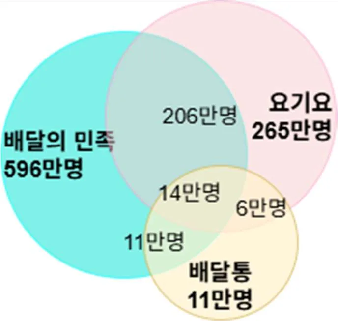
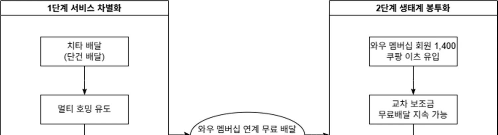
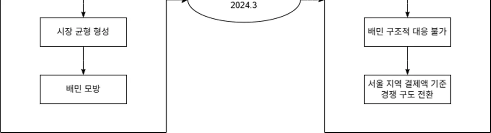
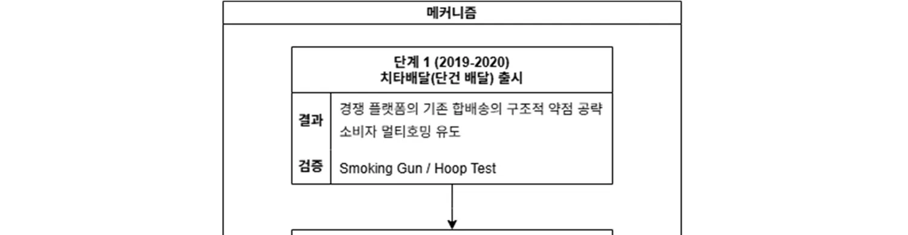
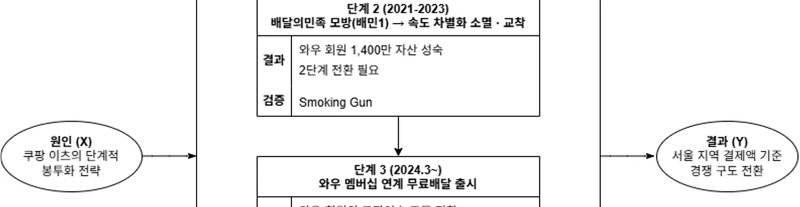
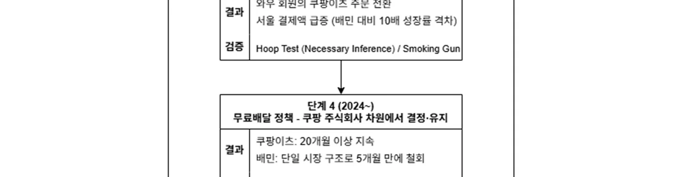

1. 서론
1.1 연구 배경
배달앱 시장은 강력한 네트워크 효과로 인해 한번 형성된 경쟁 구도가 좀처럼 바뀌지 않는 시장으로 여겨져 왔다. 그러나 2024년 이후 쿠팡이츠가 배달의민족을 추월한 현상은 이러한 통념에 배치되며, 성숙한 플랫폼 시장에서도 후발주자가 경쟁 구도를 전환할 수 있음을 보여주는 예외적 사례다. 이 전환이 단순한 가격 경쟁의 결과인지, 아니면 보다 구조적인 메커니즘이 작동한 것인지를규명하는 것은 플랫폼 경쟁 이론에 새로운 함의를 제공할 수 있으며, 본 연구는이 질문에서 출발한다.
플랫폼 경제에서 네트워크 효과는 시장을 승자독식 구조로 고착화시키는 핵심 메커니즘이다(Katz & Shapiro, 1985). 양면시장의 특성상 소비자 측의 참여가공급자 측의 가치를 높이고, 이것이 다시 소비자 측의 참여를 증가시키는 선순환이 형성되면, 후발 주자가 이를 극복하고 시장에 진입하는 것은 이론적으로나실무적으로 극히 어려운 과제가 된다(Rochet & Tirole, 2003). 다수의 연구는 네트워크 효과가 강한 시장일수록 선도 플랫폼의 지배력이 강화되고 시장이 소수의 플랫폼으로 집중되는 경향이 있음을 보여왔다(Parker et al., 2016; Cennamo & Santalo, 2013).
한국의 배달앱 시장은 이러한 네트워크 효과가 전형적으로 작동하는 시장이었다. 2019년까지 배달의민족은 약 70%의 시장점유율을 보유하며 수백만 명의소비자, 수십만 개의 가맹점, 대규모 라이더 네트워크를 구축하고 있었다(한국경제, 2019). 이 삼면시장(tri-sided market; Rochet & Tirole, 2003; Evans et al., 2006)에서 배달의민족이 구축한 네트워크 효과는 후발주자에게 거의 극복 불가능한 진입 장벽을 형성하고 있었다.
그러나 2024년 3월을 기점으로 이 시장은 극적인 전환점을 맞이했다. 쿠팡이츠는 2024년 3월 26일 '와우 멤버십 연계 무료배달' 서비스를 출시했고(조선비즈, 2024), 이후 불과 18개월 만에 서울 지역 결제액 기준 배달의민족을 추월했다. 김남근 의원실이 8개 카드사로부터 확보하여 공개한 결제액 데이터에 따르면, 2025년 8월 서울 지역 기준 쿠팡이츠는 2,113억 원을 기록하며 배달의민족의 1,605억 원을 제치고 1위를 차지했다(김남근 의원실, 2025).
동시에 쿠팡이츠 라이더 앱 사용자 수는 약 80만 명으로 증가하여 배달의민족의 약 40만 명을 두 배 가량 앞질렀다(와이즈앱, 2025). 그러나 월간 활성 사용자 수(MAU)에서는 배달의민족이 약 2,213만 명으로 여전히 1위를 유지하고있어(IGAWorks, 2025), 서울 지역 결제액 기준 경쟁 구도 전환이 완성된 것인지, 아니면 진행 중인 전환기인지에 대한 이론적 질문을 제기한다.
이처럼 결제액 기준의 역전과 MAU 기준의 역전이 동시에 나타나지 않는 현상은, 쿠팡이츠의 시장 침투가 사용자 전반의 이동이 아닌 특정 고객 집단—즉와우 멤버십에 락인된 고빈도·고단가 주문자—의 집중적 전환에 의해 주도되었을 가능성을 시사한다. 이는 단순한 가격 경쟁이나 서비스 품질 개선으로는 설명되지 않으며, 생태계 기반의 구조적 메커니즘이 작동했음을 암시한다.
<그림 1> 2019 딜리버리히어로 배달앱간 중복 사용자 및 총 사용자 현황
출처: MAU / 안드로이드OS 기준 / 아이지에이웍스, 모바일 인덱스 재구성

1.2 연구 질문
본 연구는 쿠팡이츠가 주도한 경쟁 구도 전환 현상을 설명하기 위해 다음 세가지 핵심 질문에 답하고자 한다.
RQ1: 쿠팡이츠는 언제, 어떤 전략적 전환점을 통해 배달앱 시장의 경쟁 구도를
변화시켰는가? 2019년 시장 진입 이후 5년간의 전략적 변화를 시계열적으로 추적하고, 결정적 전환점이 무엇이었는지 규명한다.
RQ2: 쿠팡이츠의 공격 전략과 배달의민족의 방어 전략은 어떻게 동태적으로 상호작용하며 현재의 시장 구조를 형성했는가? 특히 단순한 가격 경쟁으로는 설명되지 않는 구조적 인과 메커니즘을 밝힌다.
RQ3: 왜 배달의민족은 쿠팡이츠의 1단계 전략(속도 차별화)은 신속히 모방했으나, 2단계 전략(와우 멤버십 기반 봉투화)에는 구조적으로 대응하지 못했는가? 이 비대칭적 대응 능력의 근본 원인은 무엇인가?
1.3 연구의의
본 연구는 다음과 같은 학술적 기여를 목표로 한다.
이론적 기여 1: Eisenmann et al.(2011)의 플랫폼 봉투화 이론을 확장하여, 봉투화 성공의 필요조건으로 교차 보조금의 구조적 지속 가능성을 규명한다. 기존봉투화 이론은 공유 사용자 관계를 통한 시장 진입 메커니즘을 설명했으나, 그가격 우위가 지속 가능하려면 인접 시장의 수익으로 목표 시장의 비용을 보전할 수 있는 구조가 필수적임을 본 연구는 실증한다. 이 조건이 충족되지 않을때 봉투화 기업의 가격 우위는 단기 프로모션에 그치며, 배달의민족의 5개월만의 무료배달 철회가 이를 반증한다.
이론적 기여 2: 더 큰 생태계의 네트워크 효과가 단일 시장의 네트워크 효과를 압도할 수 있는 조건을 실증한다. Katz & Shapiro(1985)는 네트워크 효과가강한 시장에서 선도자의 우위가 강화됨을 보였으나, 그 네트워크 효과의 강도가시장 경계 정의에 따라 상대적으로 달라진다는 점은 충분히 이론화되지 않았다.
본 연구는 봉투화 기업이 보유한 인접 생태계의 네트워크 기반이 목표 시장의선도 플랫폼 네트워크를 압도하는 조건을 규명하며, 플랫폼 경쟁에서 시장 경계정의가 경쟁 우위 판단에 결정적임을 시사한다.
사례적 관찰: 본 연구는 쿠팡이츠의 봉투화가 두 단계에 걸쳐 순차적으로 실행되었음을 관찰한다. 1단계(속도 차별화)가 소비자의 멀티호밍을 유도하여 2단계(생태계 봉투화)의 전환 마찰을 낮추는 포석으로 기능했다는 이 순차 패턴은, 단일 시점 봉투화보다 방어하기 어려운 이유를 사례적으로 보여준다. 단, 이 패턴이 독립적 이론 명제로 일반화될 수 있는지는 추가 사례 연구를 통해 검증되어야 한다.
실무적으로 본 연구는 후발 플랫폼이 성숙 시장에 진입할 때 인접 생태계 자산을 활용하는 봉투화 전략의 설계 조건을 제시하며, 선도 플랫폼이 생태계 기반공격에 대응하기 위한 방어 전략의 구조적 한계를 구명한다.
2. 이론적 배경
2.1 네트워크 효과와 플랫폼 시장의 고착 구조
플랫폼 경쟁 이론의 출발점은 Katz & Shapiro(1985)의 네트워크 외부성(network externalities) 연구다. 이들은 재화의 가치가 해당 재화를 사용하는 다른 소비자의 수에 의존하는 현상을 직접 네트워크 효과(direct network effects)로 정의하고, 이것이 시장 집중(market concentration)과 기술 잠금(technology lock-in)을 야기함을 이론화했다. 네트워크 효과가 강한 시장에서는 선도 기업이 임계 질량 (critical mass)을 확보하면 후발주자의 진입이 극히 어려워지는 승자독식(winner- take-all) 구조가 형성된다(Katz & Shapiro, 1994).
Rochet & Tirole(2003)은 이 논의를 양면시장(two-sided markets)으로 확장했다. 양면시장에서 플랫폼은 두 개 이상의 이용자 집단을 매개하며, 한 집단의 참여가 다른 집단에 직접적인 외부성을 발생시킨다. 배달앱의 경우 소비자, 가맹점, 라이더로 구성된 삼면시장에서 각 집단의 규모가 상호 보완적으로 가치를 결정한다. Rochet & Tirole(2003)은 플랫폼이 이 교차 네트워크 외부성을 활용하여 비대칭적 가격 구조, 즉 한쪽 면에 보조금을 지급하고 다른 면에서 수익을 회수하는 전략이 최적임을 증명했다.
이 두 이론은 한국 배달앱 시장에서 배달의민족의 지배력이 어떻게 형성되고유지되었는지를 설명한다. 배달의민족은 소비자 기반 확대 → 가맹점 유입 → 서비스 품질 향상 → 소비자 기반 추가 확대라는 선순환을 구축했으며, 이 구조는 신규 진입자에게 거의 극복 불가능한 장벽으로 작용했다. 또한 Klemperer(1987)가 정의한 전환비용(switching costs) 메커니즘에 따라, 배달의민족에 익숙해진 가맹점과 소비자들은 대안 플랫폼으로 전환하는 데 추가적인 비용과 불편을 감수해야 했다.
그러나 이 이론적 틀은 쿠팡이츠의 성공을 충분히 설명하지 못한다. 네트워크효과와 양면시장 이론은 강력한 네트워크를 구축한 선도 플랫폼이 왜 후발주자에게 지배력을 빼앗겼는지 설명하는 데 한계가 있다. 이를 설명하기 위해서는플랫폼 봉투화 이론이 필요하다.
한편 Armstrong(2006)은 소비자의 멀티호밍 비용(multi-homing costs)이 플랫폼간 경쟁의 강도를 결정하는 핵심 변수임을 이론화했다. 멀티호밍 비용이 낮을수록 소비자는 복수의 플랫폼을 동시에 사용하게 되어 특정 플랫폼의 독점적 지위가 약화된다. 본 연구에서 쿠팡이츠의 와우 멤버십 연계 무료배달은 기존 와우 회원에게 쿠팡이츠의 멀티호밍 비용을 사실상 0으로 만드는 효과를 낳았다.
이 비용 구조의 변화가 소비자 행동 전환의 경제적 기반이 된다. 단, 멀티호밍비용의 정확한 수치화는 본 연구의 방법론적 범위를 벗어나므로, 개념적 적용수준으로 한정한다.
2.2. 플랫폼 봉투화: 생태계 기반 시장 진입
Eisenmann, Parker, Van Alstyne(2011)은 플랫폼 봉투화(platform envelopment)를 “한 플랫폼 시장의 사업자가 다른 플랫폼 시장에 진입하여, 자신의 기능과 목표플랫폼의 기능을 결합한 멀티플랫폼 번들을 제공함으로써, 공유된 사용자 관계를 활용해 시장점유율을 탈취하는 전략”으로 정의했다. 봉투화의 핵심 메커니즘은 두 가지다. 첫째, 봉투화 기업은 기존 플랫폼이 보유한 사용자 기반을 목표플랫폼 시장에 직접 유입시킨다. 둘째, 이 과정에서 기존 플랫폼이 보유한 사용자를 잠식함으로써 목표 플랫폼의 네트워크 효과 원천을 차단한다.
Eisenmann et al.(2011)은 봉투화가 세 가지 조건이 충족될 때 특히 효과적임을보였다. 첫째, 봉투화 기업과 목표 플랫폼이 상당 부분의 사용자 기반을 공유할때(shared user relationships). 둘째, 봉투화 기업이 목표 플랫폼의 기능을 자사 플랫폼에 번들링하는 데 드는 비용이 낮을 때. 셋째, 목표 플랫폼이 자사의 기능
을 번들링하여 반격하는 것이 구조적으로 어려울 때다.
쿠팡이츠 사례는 이 세 조건을 모두 충족한다. 첫째, 쿠팡의 와우 멤버십 가
입자 1,400만 명은 이미 쿠팡 생태계에 락인된 소비자로, 쿠팡이츠 입장에서는
제로(zero) 고객획득비용으로 접근 가능한 잠재 사용자 기반이었다. 공유 사용자
기반의 실질적 중첩 여부에 대한 직접 데이터는 비공개이나, 두 가지 간접 근거
가 이를 지지한다. 우선 와우 멤버십 가입자는 온라인 쇼핑 고빈도 이용자로서
배달앱 주력 사용자층(20-40대 도시 거주 직장인)과 인구통계적으로 높게 중첩
된다. 또한 와우 무료배달 출시 이후 쿠팡이츠 MAU가 72% 급증했음에도 배달
의민족 MAU가 유사 수준을 유지한 사실은, 신규 배달앱 사용자의 순증보다는
기존 배달의민족 사용자의 멀티호밍 전환이 주도적이었음을 시사한다. 만약 순
수 신규 창출이었다면 배달의민족 MAU의 감소가 더 뚜렷했을 것이다.1
둘째, 쿠팡은 기존 와우 멤버십 혜택에 '무료배달'을 추가하는 것으로 봉투화
를 실행했으며, 이 번들링 비용은 한계적이었다. 셋째, 배달의민족은 이커머스
생태계를 보유하지 않으므로, 동일한 방식의 생태계 기반 반격이 구조적으로 불
가능했다.
그러나 기존 봉투화 이론은 한 가지 중요한 질문에 답하지 못한다. 봉투화 기업
이 목표 시장에서 제공하는 가격 우위가 지속 가능한가? Eisenmann et al.(2011)은봉투화 공격자의 수익성을 “번들 판매 수익에서 총 비용을 차감한 값(profit
equals the difference between its total revenue and total cost)”으로 정의하고, "번들 수익이 단독 플랫폼 판매 수익보다 클 때 봉투화를 실행해야 한다"고 분석했다.
즉 원문의 수익성 분석은 번들링 시점의 단일 기간 수익성에 초점을 맞추며, 봉
투화 기업이 인접 사업부의 수익으로 목표 시장의 손실을 장기간 보전하는 사
업부 간 교차 보조금(inter-segment cross-subsidization) 구조의 지속 가능성 조건은이론화하지 않았다. 이 공백이 본 연구가 규명하는 이론적 갭이다.
2.3. 이론적 확장: 교차 보조금의 지속 가능성 조건과 단계적 실행 패턴
¹ 단, 봉투화 효과(기존 배달의민족 사용자의 전환)와 시장 확장 효과(신규 배달앱 진입자 유입) 가 동시에 작용했을 가능성을 배제하지 않는다. 두 효과 모두 경쟁 구도 전환에 기여한다. 본 연구는 기존 봉투화 이론을 두 가지 차원에서 확장하고, 하나의 사례적 관찰을 추가한다.
첫째, 봉투화 성공의 조건으로 교차 보조금의 구조적 지속 가능성을 규명한다. 봉투화 기업이 목표 시장에서 가격 우위를 유지하려면 그 비용을 감당할 수있는 수익 구조가 필요하다.
여기서 교차 보조금 개념의 층위를 명확히 구분할 필요가 있다. Rochet & Tirole(2003)이 정의한 플랫폼 내부 교차 보조금(intra-platform cross-subsidization)은단일 플랫폼 내에서 한 사용자 집단(예: 소비자)에게 낮은 가격을 부과하고 다
른 집단(예: 가맹점)으로부터 수익을 회수하는 가격 구조다. 이는 양면시장 플랫폼의 표준적 가격 설계 원리다. 반면 본 연구의 핵심 개념인 사업부 간 교차 보조금(inter-segment cross-subsidization)은 별개의 사업 세그먼트 간 수익 이전으로, 수익성 높은 사업부(이커머스)가 전략적으로 중요한 사업부(배달)의 비용을 보전하는 구조다. 이는 콘글로머리트 경쟁(conglomerate competition) 문헌(Bernheim & Whinston, 1990; Tirole, 1988)과 플랫폼 생태계 전략 문헌(Jacobides et al., 2018)에서 다루는 개념에 가깝다.
단, 본 연구의 개념은 기존 콘글로머리트 경쟁 이론과 두 가지 차원에서 구별된다. 첫째, Tirole(1988)과 Bernheim & Whinston(1990)의 콘글로머리트 경쟁 이론은 다사업부 기업이 복수 시장에서 동시적으로 경쟁하는 구조를 분석하나, 본연구에서 교차 보조금은 인접 플랫폼 생태계의 사용자 기반을 목표 시장으로직접 전환하는 봉투화 메커니즘과 결합된다. 즉 단순한 재무적 보전이 아니라사용자 기반 이전과 재무적 보전이 동시에 작동하는 복합 메커니즘이다. 둘째, 콘글로머리트 경쟁 문헌은 주로 산업재나 B2B 맥락을 다루나, 본 연구는 플랫폼 생태계 특유의 네트워크 효과와 멀티호밍 동학이 이 교차 보조금 구조의 효과를 증폭시키는 메커니즘을 규명한다.
본 연구에서 교차 보조금은 사업부 간 교차 보조금의 의미로 사용되며, Rochet & Tirole(2003)의 인용은 배달앱 시장의 양면시장 가격 구조 설명에 한정된다.
쿠팡의 경우 이커머스 세그먼트의 조정 EBITDA가 2024년 약 20억 달러(약 2.7조 원)에 달했으며(Coupang, 2025), 쿠팡이츠서비스 감사보고서(2025) 주석 21(p.49)에 따르면 동사의 영업수익은 소비자가 아닌 지배기업 쿠팡 주식회사와의 업무위탁계약에서 발생하며, 실제 결제 시 카드 매출전표의 가맹점명도 '쿠팡 주식회사'로 표시된다(연구자 직접 확인). 이 구조는 무료배달 정책의 결정과비용 부담이 쿠팡이츠서비스 단독이 아닌 쿠팡 주식회사 차원에서 이루어짐을시사한다. 한편 Coupang Inc. 2024 10-K는 와우 멤버십 수익을 Product Commerce 세그먼트로, 쿠팡이츠를 Developing Offerings 세그먼트로 별도 분류한다. 이 세그먼트 간 분리는 멤버십 혜택의 비용과 수익 귀속 주체가 다름을 공식적으로 보여준다. 다만 이커머스 수익이 배달 비용을 직접 보전하는지, 그 구체적 금액배분 방식은 계약 내용이 비공개이므로 직접 확인이 불가하다. 반면 배달의민족은 단일 시장 사업자로서 동일한 무료배달 정책을 지속할 수익 구조가 없었으며, 실제로 2024년 무료배달 정책을 5개월 만에 철회했다. 이 비대칭성이 봉투화 성공의 핵심 조건임을 본 연구는 실증한다.
둘째, 봉투화 맥락에서 더 큰 생태계의 네트워크 효과가 단일 시장의 네트워크 효과를 압도할 수 있는 조건을 규명한다. Katz & Shapiro(1985)는 네트워크 효과가 강한 시장에서 선도자의 우위가 강화됨을 보였으나, 이 이론은 경쟁이 단일 시장 내에서만 발생한다고 가정한다. 봉투화 시나리오에서는 인접 생태계의네트워크 기반을 가진 공격자가 목표 시장의 선도 플랫폼과 경쟁하므로, 효과적인 네트워크의 범위가 시장 경계를 넘어선다. 본 연구는 이 조건—구체적으로봉투화 기업의 인접 생태계 사용자 기반이 목표 시장 선도자의 네트워크 규모를 충분히 상회할 때—이 단일 시장 선도자의 네트워크 우위를 무력화하는 메커니즘을 실증한다.
사례적 관찰: 단계적 실행 패턴. 본 연구는 쿠팡이츠의 봉투화가 두 단계에 걸쳐 순차적으로 실행되었음을 관찰한다. 1단계(속도 차별화)에서는 치타배달을 통해 소비자의 멀티호밍을 유도하고 시장에 균열을 만들었으며, 이 균열이 2단계 (생태계 봉투화) 실행 시 전환 마찰을 낮추는 역할을 했다. 이 순차 패턴은 단일 시점 봉투화보다 방어하기 어려운 이유를 사례적으로 보여준다. 단, Eisenmann et al.(2011)은 봉투화를 다단계 실행으로 이론적으로 제한하지 않았으므로, 이 패턴이 독립적 이론 명제인지 아니면 특정 시장 맥락에서의 사례적 특성인지는 추가 사례 연구를 통해 검증되어야 한다.
<그림 2> 단계적 봉투화 모델 (Staged Envelopment Model)

2.4. 이론적 배경 요약과 분석 틀
위의 이론적 검토를 바탕으로 본 연구의 분석 틀을 정리하면 표 1과 같다.
<표 1> 플랫폼 경쟁 이론의 발전과 본 연구의 위치

시기 주요 이론 핵심 개념 대표 연구 본 연구와의 관련성배달의민족의 시장 1단계 Katz & Shapiro 네트워크 직접·간접 네트워크 효 지배력 원천 설명: (1980s- (1985, 1994); 효과 과, 임계 질량, 락인 왜 후발 진입이 구조 1990s) Klemperer (1987)
적으로 어려운가교차 네트워크 외부성, Rochet & Tirole 배달앱 삼면시장의 2단계 양면시장가격 구조 비대칭성, (2003); Armstrong 구조 분석 및 멀티호 (2000s) 이론멀티호밍 (2006) 밍 행태 설명본 연구의 핵심 이론공유 사용자 관계 활 3단계 플랫폼 봉 Eisenmann et al. 적 프레임워크: 쿠팡용, 멀티플랫폼 번들 (2010s) 투화 (2011) 이츠의 생태계 기반링, 네트워크 잠식공격 메커니즘 설명
교차 보조금의 구조적 봉투화 성공 조건 규
본 연구의 확 봉투화 이 지속 가능성, 네트워크 명: 왜 쿠팡이츠는본 연구
장 론의 확장 효과의 상대성, 단계적 성공하고 배민은 대실행 패턴(관찰) 응에 실패했는가
2.5 연구 가설
위의 이론적 검토를 바탕으로 본 연구는 다음 세 가지 가설을 제시한다. 각가설은 단계적 봉투화 모델의 각 단계와 대응한다.
가설 1 (H1): 1단계 봉투화의 한계
쿠팡이츠의 초기 속도 차별화 전략(치타배달)은 배달의민족의 시장 지배력에균열을 만들고 소비자의 멀티호밍을 유도하는 데 성공했으나, 배달의민족의 신속한 모방(배민1)으로 인해 차별적 우위가 소멸되어 단독으로는 서울 지역 결제액 기준 경쟁 구도 전환으로 이어지지 못했다.
이론적 근거: 서비스 차별화만으로는 네트워크 효과에 기반한 선도 플랫폼의구조적 우위를 극복하기 어렵다. 모방 가능한 기능 혁신은 지속적 경쟁우위를제공하지 못한다(Eisenmann et al., 2011).
가설 2 (H2): 2단계 봉투화의 성공
쿠팡이츠의 와우 멤버십 기반 봉투화 전략은 이커머스 생태계에 락인된 고객기반을 직접 배달 시장으로 유입시키고, 교차 보조금을 통해 지속 가능한 무료배달 정책을 유지함으로써, 배달의민족이 구조적으로 모방할 수 없는 비대칭적경쟁 우위를 구축했으며, 이것이 결제액 기준 경쟁 구도 전환으로 귀결되었다.
이론적 근거: 봉투화는 공유 사용자 관계를 활용하여 목표 플랫폼의 네트워크 효과 원천을 잠식할 때 성공한다. 단, 그 가격 우위가 지속 가능하려면 인접시장의 교차 보조금 구조가 필수적이다(Eisenmann et al., 2011; Rochet & Tirole, 2003).
방법론적 유의사항: 본 연구는 2024년 와우 멤버십 연계 무료배달을 봉투화전략으로 해석하나, 쿠팡이츠 초기 사업 기획 관련자(Interviewee A)는 "와우 멤버십 설계 시에는 배달 서비스와의 연계까지 고려하지는 않았다"고 밝혔다. 따라서 이 연계가 처음부터 의도된 전략적 설계였는지, 아니면 시장 상황에 따라단계적으로 발전한 결정이었는지는 현재 증거로는 확정하기 어렵다. 본 가설은결과적 메커니즘을 봉투화 이론으로 설명하는 것이지, 의도의 사전성을 주장하는 것이 아님을 명시한다.
가설 3 (H3): 경쟁사 대응 실패의 구조적 원인
배달의민족의 대응 전략(배민클럽 출시, 일시적 무료배달)이 실패한 근본 원인은 전략적 실책이 아니라 단일 시장 수익 구조라는 구조적 제약에 있다. 인접생태계의 교차 보조금 없이는 무료배달 정책을 지속할 수 없으므로, 배달의민족의 대응은 태생적으로 한시적일 수밖에 없었다.
이론적 근거: 봉투화 공격에 대한 효과적인 방어는 동일한 수준의 생태계 자산을 보유하거나 새로운 봉투화로 역공하는 것이다(Eisenmann et al., 2011). 이 중어느 것도 단일 시장 사업자에게는 단기간에 가능하지 않다.
3. 연구 방법
3.1 사례 선정
본 연구가 쿠팡이츠-배달의민족 경쟁 사례를 선택한 이유를 Yin(2018)의 사례유형론에 따라 설명한다. 이 사례는 계시적 사례(revelatory case)에 해당한다. 계시적 사례란 연구자가 이전에는 접근하기 어려웠던 현상을 직접 관찰할 수 있게 된 경우로(Yin, 2018: 51), 네트워크 효과로 고착된 성숙 플랫폼 시장에서 봉투화 전략이 실제로 경쟁 구도 전환을 유발하는 메커니즘을 실시간으로 관찰할수 있다는 점에서 이 정의에 부합한다.
이 사례가 이론 검증에 적합한 이유는 세 가지다. 첫째, Eisenmann et al.(2011) 의 봉투화 이론이 예측하는 조건—공유 사용자 기반, 낮은 번들링 비용, 방어불가능한 목표 플랫폼—이 명확히 충족되어 있어 이론 검증의 맥락이 투명하다.
둘째, 감사보고서, 의원실 자료, 내부 인터뷰 등 다양한 출처의 증거가 확보 가능하여 과정 추적의 요건을 충족한다. 셋째, 한국 배달앱 시장은 전 세계적으로플랫폼 경쟁이 가장 치열한 시장 중 하나로, 이론적으로 일반화 가능한 통찰을도출하기에 적합한 극단적 사례(extreme case)의 특성도 지닌다.
선택 편향(selection bias)의 가능성에 대해서는 다음을 명시한다. 본 연구는 봉투화가 성공한 사례를 분석하므로, 봉투화 전략을 시도했으나 실패한 사례는 포함하지 않는다. 선택 편향, 그 중에서도 생존 편향(survivorship bias)의 가능성에 대해서는 단일 사례 연구의 내재적 한계이며, 경계 조건(5.2절 이론적 기여)의 명시와 비교 사례 제시를 통해 부분적으로 완화했다. 향후 봉투화 실패 사례와의비교 연구가 이론의 경계 조건을 검증하는 데 필요하다.
3.2 과정 추적 방법론
본 연구는 Beach & Pedersen(2019)이 제시한 과정 추적(process tracing) 방법론을채택한다. 과정 추적은 단일 사례 연구에서 인과성을 입증하기 위한 질적 방법론으로, 원인(X)과 결과(Y) 사이의 '블랙박스'를 열어 중간 과정을 단계별로 검증한다. 이 방법론의 핵심은 인과적 메커니즘을 구성하는 일련의 중간 단계를식별하고, 각 단계가 실제로 발생했음을 증거로 입증하는 것이다(Beach & Pedersen, 2019: 11-13).
과정 추적이 이 연구에 적합한 이유는 세 가지다. 첫째, 쿠팡이츠 사례는 단일사례이므로 통계적 비교 방법론의 적용이 불가능하다. 둘째, 본 연구의 핵심 질문은 "무엇이 일어났는가"가 아니라 "왜, 어떤 메커니즘으로 일어났는가"이므로, 인과 메커니즘의 각 단계를 추적하는 방법론이 필요하다. 셋째, 전략적 의사결정 과정에 관한 데이터는 내부자 관점이 아니면 직접 관찰이 어려우므로, 다양한 출처의 증거를 종합하는 과정 추적이 적합하다.
<그림 3> 단계적 봉투화의 인과 메커니즘 과정 추적 도식

본 연구에서 과정 추적은 다음과 같이 적용된다. 원인(X)은 쿠팡이츠의 단계적봉투화 전략이며, 결과(Y)는 서울 지역 결제액 기준 경쟁 구도 전환이다. 이 둘사이의 인과적 메커니즘은 다음 다섯 단계로 구성된다: (1) 1단계 봉투화(속도차별화)를 통한 멀티호밍 유도, (2) 배달의민족의 모방에 따른 교착과 2단계 봉투화로의 전환, (3) 와우 회원의 쿠팡이츠 주문 전환, (4) 교차 보조금을 통한 무료배달 정책의 지속 가능성 확보, (5) 소비자의 주력 플랫폼 전환 및 라이더 공급 이동.


이 중 메커니즘 단계 3(와우 회원의 쿠팡이츠 주문 전환)은 비공개 운영 데이터의 부재로 직접 검증이 불가능하다. Beach & Pedersen(2019: 89-91)에 따르면, 핵심연결고리의 직접 증거가 없을 때 연구자는 해당 단계를 최소한의 필요 추론 (necessary inference)으로 명시하고, 그 추론이 관찰된 결과(결제액 103% 급증, 배민과의 10배 성장률 격차)와 인과적으로 일관성이 있음을 보여야 한다. 본 연구는 이 방식을 따르며, 해당 증거 공백은 5.5절 연구의 한계와 향후 연구 방향에서 재확인한다.
또한 Beach & Pedersen(2019)은 과정 추적을 이론 검증(theory-testing)과 이론 구축(theory-building)으로 구분하나, 단일 연구에서 두 목적이 혼재되는 경우도 인정한다. 본 연구는 Eisenmann et al.(2011)의 봉투화 이론 검증을 주목적으로 하는 theory-testing 과정 추적을 수행한다. 쿠팡이츠의 봉투화가 두 단계에 걸쳐 순차적으로 실행되었다는 관찰은 사례의 서술적 특성으로 다루며, 이것이 독립적 이론 명제로 일반화될 수 있는지는 추가 사례 연구를 통해 검증되어야 할 과제로남긴다.
3.3 증거 평가 기준
수집된 증거는 Van Evera(1997)가 제시한 네 가지 테스트를 통해 평가된다. 각테스트는 증거의 진단적 가치(diagnostic value)를 다른 방식으로 측정하며, 그 특성은 표 2와 같다.
<표 2> Van Evera(1997)의 증거 평가 기준
테스트 조건 유형 증거 있을 때 증거 없을 때 진단적 가치약한 확률적 증 가설 신뢰도 소 가설 신뢰도 Straw-in-the-Wind 낮음거 폭 상승 소폭 하락가설유지 (확증 중간 (기각력 높 Hoop Test 필요조건 가설 기각아님) 음)
가설 신뢰도 대 가설 유지 (기각 높음 (확증력 높 Smoking Gun 충분조건에 근접폭 상승 아님) 음)
가설 확증, 대안 가설 기각, 대안 최고 (극히 드물 Doubly-Decisive 필요충분조건기각 확증 게 적용)
(출처: Van Evera (1997: 31-32) 재구성)
본 연구는 Doubly-Decisive 테스트의 적용을 엄격히 제한하고, 대부분의 증거를 Smoking Gun 또는 Hoop Test 수준으로 보수적으로 분류한다. 또한 각 증거에 대해 대안적 설명(alternative explanation)을 명시하여 인과 추론의 엄밀성을 확보한다.
3.4 데이터 수집
본 연구는 자료 출처를 1차 자료와 2차 자료로 엄격히 구분한다. 본 연구의 핵심 인과 주장은 인터뷰 진술이 아니라 검증 가능한 1차 자료에 근거한다. 봉투화 성공의 핵심 조건인 교차 보조금의 구조적 지속 가능성은 감사보고서 주석, SEC 공시(10-K)의 세그먼트 분리, 카드 결제 구조라는 세 층위의 문서 증거로입증되며(4.2.3절), 경쟁 구도 전환의 결과는 국회의원실이 카드사로부터 확보한결제액 데이터로 확인된다. 인터뷰는 이러한 문서 증거만으로는 접근할 수 없는내부 의사결정 맥락을 보완하는 삼각검증의 보조 수단으로 한정하여 활용한다.
1차 자료 (Primary Sources)
쿠팡이츠서비스 유한회사 감사보고서 (2021-2024년): 외부감사인이 검증한 재무 데이터로 가장 신뢰도가 높은 자료
주식회사 우아한형제들 감사보고서 (2021-2024년): 동일 기준 적용
쿠팡 Inc. 연간보고서 및 IR 자료 (2022-2024년): SEC 공시 자료로 법적신뢰성 확보
김남근 의원실이 8개 카드사로부터 직접 확보·공개한 배달앱 결제액 데이터: 국회 의정 활동을 통한 행정 자료로 1차 자료에 준하여 취급심층 인터뷰 자료 (In-depth Interview Sources)
본 연구는 공개 데이터만으로는 확인이 불가능한 내부 의사결정 맥락을 보완하기 위해 쿠팡이츠 전략 수립 및 운영에 직접 관여한 전직 임직원 3인을 대상으로 이메일 비동기 인터뷰(asynchronous email interview)를 실시했다. 이메일 인터뷰는 연역적 이론 검증 사례 연구에서 방법론적으로 정당화되며(Meho, 2006; Natow, 2020), 응답자가 질문을 충분히 숙고한 후 응답할 수 있다는 장점이 있다 (Dahlin, 2021). 인터뷰 질문지는 가설과 이론적 방향성을 노출하지 않도록 설계했으며, 응답자의 편향을 최소화하기 위해 유도 질문을 배제했다(Patton, 2002). 세 인터뷰이의 역할과 담당 영역은 다음과 같다.
<표 3> Interviewee의 역할과 담당 영역
Interviewee 역할 재직 기간 주요 담당 Interviewee A 직위 비공개 비공개 비공개 Interviewee B 직위 비공개 비공개 비공개 Interviewee C 직위 비공개 비공개 비공개세 인터뷰이의 담당 영역이 H1(1단계 봉투화), H2(2단계 봉투화), H3(경쟁사 대응)의 각 인과 연결고리를 상호 보완적으로 커버하도록 목적 표집(purposive sampling)을 적용했다. 삼각검증(triangulation)을 위해 동일한 사건이나 의사결정에 대한 복수 인터뷰이의 진술을 상호 대조했으며, 인터뷰 자료와 감사보고서· 언론 보도 등 독립적 자료 출처 간의 일관성을 확인했다. 선택적 인용 편향 (cherry-picking)을 방지하기 위해 세 인터뷰이의 응답 전문을 부록에 수록한다. 본문에서 인용된 진술은 해당 메커니즘 단계의 직접 증거로 판단된 발언이며, 독자는 부록을 통해 전체 응답 맥락을 확인할 수 있다.
2차 자료 (Secondary Sources)
IGAWorks의 MAU 분석을 인용한 언론 보도: 원 데이터 직접 확인 불가. 여러 매체의 교차 보도를 통해 신뢰도 확보
와이즈앱의 라이더 앱 사용자 분석을 인용한 언론 보도: 동일 기준 적용
주요 언론 보도(디지틀조선, 조선일보, 헤럴드경제 등): 전략 발표 및 시장 반응의 타임라인 재구성에 활용접근 불가 자료 및 한계다음 데이터는 비공개 정보로 직접 확인이 불가능했다: (1) 와우 회원의 쿠팡이츠 주문 전환 비율, (2) 지역별·연령별 세부 결제 데이터, (3) 라이더별 플랫폼 전속 비율. 단, (3)의 경우 Interviewee C의 진술이 라이더 이동의 인과 메커니즘을부분적으로 보완한다.
4. 사례 분석
4.1 1단계 봉투화 (2019-2023)
4.1.1 시장 진입과 속도 차별화
쿠팡이츠는 2019년 4월 배달앱 시장에 진입했다. 당시 배달의민족이 약 70%
의 시장점유율로 압도적 우위를 점하고 있었으며, 요기요와 함께 실질적인 양강구도를 형성하고 있었다(한국경제, 2019). 네트워크 효과와 전환비용이 강하게작동하는 이 시장에서, 쿠팡이츠는 생태계 자산을 직접 투입하는 2단계 봉투화에 앞서 먼저 시장에 균열을 만들 필요가 있었다.
보완재 공급 구조의 장벽과 우회 전략
쿠팡이츠가 직면한 첫 번째 구조적 장벽은 기존 라이더 공급망이었다. 당시배달의민족은 전국 배달대행사와의 공급 계약 구조를 통해 숙련 라이더 풀을사실상 선점하고 있었다. 오토바이를 보유한 전업 라이더가 되기 위해서는 차량구입·보험·유지비 등 상당한 초기 투자가 필요했으며, 숙련된 배차 판단은 수년간의 경험을 통해서만 축적되는 암묵지였다. 이 구조는 신규 플랫폼의 라이더확보를 극히 어렵게 만들었다. Interviewee C의 LinkedIn 프로필은 당시 "long-term supply-pool strategy and short-term tactics to control supply of rider against competitors" 가 핵심 과제였음을 확인해주며, 이는 라이더 공급 확보가 실제로 치열한 경쟁의 핵심 전선이었음을 방증한다.
쿠팡이츠는 이 장벽을 정면 돌파가 아닌 우회로 극복했다. 크라우드소싱 모델과 AI 자동 배차 기술을 결합하여 완전히 새로운 보완재 공급 경로를 창출한것이다. 자가용·자전거를 보유한 일반인도 스마트폰 앱만으로 30분 이내에 라이더로 등록할 수 있도록 온보딩 장벽을 제거했으며, AI 자동 배차 시스템이 경로 ·시간·수익성 판단을 대신함으로써 숙련도 의존성을 제거했다. 이를 통해 직장인·학생·주부 등 다양한 집단이 탄력적으로 공급에 참여할 수 있게 되었다.
이 전략의 핵심은 초기 1년간의 공격적 배달단가 설계였다. Interviewee C는 " 초기(2019-2020년)에는 배달비에 아예 신경 쓰지 않고, 라이더 확보를 위해 무조건 공격적인 배달단가를 진행했다"고 밝혔다(Interviewee C, 2026). 구체적으로 타사 대비 건당 1.5배 수준의 배달단가를 적용했으며, 휴일 및 기상재해 시에는타사 대비 건당 5-6배에 해당하는 리스크비용을 제공했다(Interviewee C, 2026). 라이더의 플랫폼 선택 기준이 배달단가임을 감안하면(Interviewee C, 2026), 이 압도적 단가 구조가 초기 라이더 풀 확보의 직접적 원인이었다.
충분한 라이더 풀이 확보된 이후에는 단가를 점진적으로 하향 조정했다. "배달원 확보 후부터 기간을 정해놓고 지속적으로 월 얼마씩 목표를 잡아 하향했으며, 이미 당일 물량을 커버할 만한 배달원이 확보된 상태였기 때문에 반발이없었다"(Interviewee C, 2026). 이는 초기의 손실 감수가 공급망 안정화 이후 비용최적화로 이어지는 의도적 2단계 전략이었음을 보여준다.
쿠팡이츠 초기 사업 기획에 관여한 Interviewee A는 "쿠팡의 기존 자산을 그대로 활용할 목적도 있었고 중장기적으로는 결제 인프라와 연계해서 오프라인 결제까지 연동시킬 그림을 그렸다"고 밝혔다(Interviewee A, 2026). 단, 와우 멤버십과 배달 서비스의 직접 연계에 대해서는 "설계 시에는 배달 서비스와의 연계까지 고려하지는 않았다. 어떠한 형태로든 연결될 가능성은 생각했지만 구체적인그림은 없었다"고 밝혀(Interviewee A, 2026), 생태계 자산 연계가 초기 기획 단계에 구체적으로 설계된 것이 아니라 단계적으로 발전된 방향임을 확인했다.
치타배달: 보완재 확보가 가능하게 한 서비스 차별화
이처럼 새로운 라이더 공급 경로를 구축한 것이 치타배달 실현의 전제 조건이었다. 쿠팡이츠가 선택한 차별화 전략은 기존 배달앱의 구조적 약점인 합배송 (묶음배달) 방식을 공략하는 것이었다. 기존 배달앱은 라이더가 여러 주문을 동시에 처리하는 방식으로 배달 시간이 길어지고 음식 품질이 저하되는 문제가있었다. 쿠팡이츠는 라이더 1명이 1건의 주문만 처리하는 2019년 12월 '치타배달(단건 배달)'을 출시하여 평균 배달 시간을 단축했다.
본 연구의 staged envelopment 모델에서 이 치타배달 단계는 1단계에 해당한다. 치타배달을 통해 소비자들이 쿠팡이츠를 경험하게 되면, 2단계 봉투화 실행 시와우 회원들의 플랫폼 전환 마찰이 줄어든다. 이는 Eisenmann et al.(2011)이 봉투화의 핵심 조건으로 제시한 "공유 사용자 관계(shared user relationships)"를 구축하는 과정으로 볼 수 있다. 즉 1단계는 2단계의 성공 조건을 만드는 포석이었다.
증거 평가: 치타배달 출시 이후 쿠팡이츠의 사용자 수가 증가했다는 언론 보도가 다수 존재하나, 정확한 수치 데이터는 확보하지 못했다. 보완재 확보 전략의구체적 내용은 Interviewee C의 진술로 직접 확인되어 Smoking Gun 수준으로 평가한다. 치타배달 서비스 자체의 소비자 효과는 Straw-in-the-Wind 수준으로 평가한다.
4.1.2 배달의 민족의 신속한 모방
쿠팡이츠의 속도 전략은 배달의민족에게 명확한 위협으로 인식되었다. 배달의민족은 2021년 6월 '배민1'이라는 단건 배달 서비스를 출시했다(매일경제, 2021.6.8). 배민1은 쿠팡이츠의 치타배달과 실질적으로 동일한 방식이었으며, 이는 배달의민족이 쿠팡이츠의 차별화 전략을 명확히 위협으로 인식하고 대응했음을 보여준다.
배달의민족의 대응 속도는 주목할 만하다. 쿠팡이츠가 치타배달을 본격화한시점으로부터는 불과 6개월 만의 대응이었다. 이는 배달의민족이 서비스 기능의모방에 있어서는 충분한 실행 역량을 보유하고 있었음을 시사한다.
증거 평가: 배민1 출시는 언론 보도(매일경제, 2021.6.8)로 확인된다. 이것이 쿠팡이츠의 치타배달에 대한 직접적 대응이라는 점은 Smoking Gun 수준의 증거다.
배달의민족이 경쟁사의 서비스 혁신은 모방할 수 있으나 생태계 기반 전략은모방할 수 없다는 H3의 핵심 논지를 역설적으로 뒷받침한다.
4.1.3 교착상태와 전략적 전환의 필요성
배민1 출시 이후인 2022-2023년은 쿠팡이츠와 배달의민족이 교착상태에 빠진시기였다. 양사 모두 단건 배달을 제공하게 되면서 속도라는 차별화 요소가 사실상 소멸되었다. 이 시기의 구체적 시장점유율 데이터는 확보하지 못했으나, 쿠팡이츠가 결제액 기준 경쟁 우위에 이르지 못했다는 사실 자체가 1단계 전략의 한계를 방증한다.
이 교착상태는 쿠팡이츠로 하여금 서비스 기능 혁신 이외의 전략적 수단을모색하게 만든 구조적 압력으로 작용했다. 동시에 쿠팡 본사 차원에서는 와우멤버십 가입자가 2023년 말 기준 약 1,400만 명에 달하는 수준으로 성장하고 있었으며(Coupang, 2024 Q4 Earnings Release), 이는 2단계 봉투화를 실행할 수 있는자산 기반이 충분히 성숙했음을 의미했다.
H1 검증 결과: 쿠팡이츠의 속도 차별화 전략(치타배달)은 배달의민족의 시장 지배력에 균열을 만들고 소비자의 멀티호밍을 유도하는 데는 성공했으나, 배달의민족의 신속한 모방(배민1)으로 인해 차별적 우위가 소멸되어 단독으로는 서울지역 결제액 기준 경쟁 구도 전환으로 이어지지 못했다. H1은 지지된다.
<표 4> H1(1단계 봉투화의 한계) 검증 증거
결인과 단계 예상 증거 실제 증거 테스트 유형 대안적 설명과치타배달 출시사용자 증가 언론 보도로 Straw-in-the- 통 쿠팡 브랜드 인지도의 → 초기 인지보도 확인 Wind 과 효과일 수 있음도 형성배민1 출시배민1 출시 → 배민의 독자적 혁신 가단건배달 동 언론 확인(매 통속도 차별화 Smoking Gun 능성 있으나 시점상 대일화 일경제, 과소멸 응으로 판단 2021.6.8)
차별화 소멸 2024.3 이전교착상태 지 통 2022-2023년 직접 데이 → 전략 전환 쿠팡이츠 결 Hoop Test 속 과 터 미확보로 간접 추론필요 제액 미역전 Phase 1 소결
첫째, O2O 플랫폼에서 물리적 배송 역량(보완재) 확보는 시장 진입의 필요조건이다. 디지털 매칭 기술만으로는 부족하며, 실제로 음식을 배달할 보완재가필수적이다.
둘째, 기존 보완재 풀을 확보하는 경쟁을 회피하고 새로운 공급 경로를 창출하는 것이 효과적인 진입 전략이다. 쿠팡이츠는 기존 전문 라이더를 두고 배달의민족과 경쟁하지 않고, 완전히 새로운 공급원인 일반인을 발굴했다.
셋째, 기술 자원의 전략적 활용이 새로운 공급 경로 창출을 가능하게 했다. AI 배차 기술이 없었다면 일반인을 보완재로 활용하는 것이 불가능했다.
넷째, 그러나 이러한 기술 자원만으로는 지속 가능한 경쟁 우위를 확보할 수없다. 진입에는 성공했지만, 시장을 장악하고 지속 성장하려면 다른 차원의 경쟁 우위가 필요했다.
4.2 2단계 봉투화 (2024)
4.2.1 전략적 변곡점: 와우 멤버십 기반 봉투화 실행
2024년 3월 26일, 쿠팡은 와우 멤버십 연계 무료배달 서비스를 발표했다(조선비즈, 2024.3.26). 이 전략의 본질은 가격 할인이 아니라 소비자의 의사결정 구조자체를 재편하는 봉투화의 실행이었다.
Eisenmann et al.(2011)의 정의에 따르면, 봉투화는 플랫폼 기업이 자사의 기능과 목표 플랫폼의 기능을 결합한 번들을 제공함으로써 공유 사용자 기반을 목표 시장으로 전환하는 전략이다. 쿠팡의 와우 멤버십 연계 무료배달은 이 정의에 정확히 부합한다. 이커머스 플랫폼(쿠팡)의 기능에 배달 플랫폼(쿠팡이츠)의기능을 번들링하여, 이커머스 생태계에 이미 락인된 1,400만 와우 회원을 배달시장으로 직접 유입시킨 것이다.
소비자 입장에서의 의사결정 구조 변화는 구체적으로 다음과 같다. 기존에는 배달비가 주문마다 발생하는 변동비용(평균 약 3,500원)이었으나, 와우 회원에게는이미 지불한 구독료(월 7,890원)에 포함된 고정비용으로 전환되었다. 배달비 평균 3,500원을 기준으로 월 2-3회만 배달 주문을 해도 구독료 대비 본전이 되므로, 합리적 소비자라면 쿠팡이츠를 우선 선택할 유인이 강하게 형성된다. 이 구조 변화가 소비자의 주력 플랫폼 전환을 유도하는 핵심 메커니즘이다.
4.2.2 와우 회원 유입과 결제액 역전
와우 멤버십 연계 무료배달 출시 이후 쿠팡이츠의 결제액은 급격히 증가했다.
김남근 의원실이 8개 주요 카드사의 결제금액을 합산하여 공개한 자료에 따르면, 서울 지역 기준 쿠팡이츠의 결제액은 2024년 3월부터 2025년 8월까지 103% 증가한 반면, 배달의민족은 같은 기간 11.6% 증가에 그쳤다(헤럴드경제, 2024.11.11; KBS, 2024.10.19). 2025년 8월 기준 서울 지역 결제액은 쿠팡이츠 2,113억 원, 배달의민족 1,605억 원으로, 쿠팡이츠가 약 32% 앞서고 있다.
이 결제액 급증의 원인으로 두 가지 해석이 가능하다. 첫 번째 해석은 와우회원의 직접 유입으로, 기존에 배달앱을 이용하지 않거나 배달의민족을 이용하던 와우 회원들이 쿠팡이츠로 전환한 것이다. 두 번째 해석은 무료배달이라는가격 인하가 기존 쿠팡이츠 이용자의 주문 빈도를 증가시킨 것이다.
와우 멤버십 연계 무료배달 출시를 직접 담당한 Interviewee B는 "예상한 이상의 반응이었습니다"라고 증언했다(Interviewee B, 2026). 이 진술은 와우 회원의유입이 내부 목표를 상회하는 수준으로 이루어졌음을 시사하는 내부 증거다.
두 효과가 동시에 작용했을 가능성이 높으나, Interviewee B의 진술은 봉투화메커니즘이 작동했음을 지지한다. 단, 와우 회원의 직접 전환 비율에 대한 정확한 수치 데이터는 비공개로 확보하지 못했으므로, 이 단계의 증거는 Hoop Test 수준으로 평가한다. 이 단계에 대한 직접적 수치 검증 없이는 인과성의 완전한확정이 어려움을 인정한다.
대안적 설명 검토: 결제액 급증이 봉투화 효과가 아닌 고물가 환경에서의 소비자 가격 민감도 증가에 의한 것일 수 있다. 그러나 이 설명은 왜 배달의민족이동일 기간 11.6% 증가에 그쳤는지를 설명하지 못한다. 동일한 거시경제 환경에서 양사의 성장률 차이가 10배에 달한다는 점은 거시경제 요인만으로는 설명이불충분함을 보여준다.
4.2.3 교차 보조금의 구조적 지속 가능성
쿠팡이츠의 무료배달 정책이 단기 프로모션이 아닌 구조적으로 지속 가능한전략임을 뒷받침하는 재무적 증거가 존재한다.
<표 5> 쿠팡이츠서비스 재무 현황 (2021-2024)
연도 영업수익 (억원) 영업이익 (억원) 영업이익률(%)
2021 3,807 -621 -16.3 2022 7,233 14 0.2 2023 10,652 77 0.7 2024 18,819 217 1.2
(출처: 쿠팡이츠서비스 감사보고서 2022, 2023, 2024, 2025)
표 5는 두 가지 사실을 보여준다. 첫째, 쿠팡이츠는 2022년 이후 흑자를 유지
하고 있으나 영업이익률이 1-2% 수준에 불과하다. 이 낮은 이익률은 교차 보조금의 직접 증거라기보다, 정책 결정 주체가 쿠팡 주식회사 차원임을 시사하는구조적 맥락으로 해석되어야 한다. 둘째, 영업수익이 2021년 대비 2024년에 약 5배 증가했음에도 영업이익률이 낮게 유지된다는 것은, 증가한 수익이 무료배달비용 확대에 재투입되고 있음을 시사한다.
이 낮은 이익률의 구조적 배경은 쿠팡 본사의 사업 포트폴리오에서 확인된다.
쿠팡 Inc.의 2024년 연간보고서에 따르면, Product Commerce 세그먼트의 조정 EBITDA는 약 20억 달러(약 2.7조 원)를 기록했다(Coupang, 2025). 쿠팡이츠가 포함된 Developing Offerings 세그먼트는 6억 3,100만 달러(약 8,500억 원)의 조정 EBITDA 손실을 기록했으나, 전체 사업 포트폴리오 차원에서 이커머스와 배달사업의 손익 규모 차이가 존재함을 보여준다. 이 구조는 사업부 간 교차 보조금이 구조적으로 가능한 포트폴리오 구성을 보여준다.
또한 쿠팡의 무료배달은 설계 단계부터 비용 효율성을 내재하고 있다. 무료배달은 '묶음배달'에만 적용되며, '한집배달(단건배달)'은 별도 유료로 운영된다. 소비자는 시간 여유가 있으면 무료인 묶음배달을 선택할 유인이 생기고, 이는 라이더 1인당 처리 건수를 높여 건당 배달 원가를 낮추는 운영 효율로 이어진다.
이 설계는 무료배달의 비용 부담을 내부적으로 흡수하는 구조적 장치다. 더불어쿠팡의 무료배달 정책은 2024년 3월 출시 이후 2025년 11월 현재까지 20개월이상 변함없이 유지되고 있다는 사실 자체가, 이 정책이 경제적으로 감당 가능한 수준임을 방증한다.
반면 우아한형제들(배달의민족 운영사)은 2024년 영업수익 3조 4,231억 원, 영업이익 2,659억 원으로 영업이익률 7.8%를 기록했다(우아한형제들, 2025). 단일시장 사업자로서 이 이익 구조에서 지속적 무료배달 정책을 실행하면 손익분기점이 무너진다. 이것이 배달의민족이 무료배달 정책을 5개월 만에 철회할 수밖에 없었던 재무적 근거다.
증거 평가: 결제 구조(가맹점명=쿠팡 주식회사, 감사보고서 주석 21, 세그먼트분리)는 1차 자료로 직접 확인된다. 이것은 쿠팡 주식회사 차원의 가격 정책 지속가능성이 봉투화 성공의 조건임을 지지하는 Smoking Gun 수준의 증거다.
대안적 설명 검토: 쿠팡이츠의 낮은 이익률이 교차 보조금이 아닌 운영 효율화투자의 결과일 수 있다. 그러나 이 설명이 옳다면, 배달의민족도 동일한 효율화를 통해 무료배달을 지속할 수 있어야 한다. 배달의민족이 5개월 만에 정책을철회했다는 사실은 결제 주체 구조와 세그먼트 분리에서 비롯된 구조적 지속가능성의 차이가 운영 효율화로는 대체 불가능함을 보여준다.
4.2.4 소비자의 주력 플랫폼 전환: MAU와 결제액의 불일치
봉투화 이론의 예측에 따르면, 봉투화가 성공하면 목표 플랫폼의 사용자가 봉투화 기업의 플랫폼으로 이동한다. 그러나 쿠팡이츠 사례에서 MAU와 결제액은상반된 신호를 보내고 있다. 2024년 12월 기준 배달의민족의 MAU는 약 2,261만명으로 여전히 1위이나, 쿠팡이츠는 약 1,002만 명으로 전년 대비 72% 증가하며 처음으로 1,000만 명을 돌파했다(중앙이코노미뉴스, 2025.2.7). 결제액에서는쿠팡이츠가 서울 지역 기준 앞서고 있다.
이 불일치는 봉투화의 특수한 패턴을 반영한다. 쿠팡이츠로 유입된 와우 회원은 배달의민족 앱을 삭제하지 않은 채 실제 주문만 쿠팡이츠에서 하는 "확인용멀티호밍" 상태에 있을 가능성이 높다. 즉 MAU는 과거의 습관적 앱 보유를 반영하고, 결제액은 현재의 실제 소비 선택을 반영하는 것으로 해석된다. 결제액기준 역전은 와우 회원이 구매 결정의 중심을 쿠팡이츠로 이동시켰음을 보여주는 신호다.
증거 평가: MAU 데이터는 2차 자료(언론 보도 인용)이며, 결제액 데이터는 1차자료에 준하는 의원실 자료다. 이 불일치 패턴은 와우 회원의 주력 플랫폼 전환을 간접적으로 지지하는 Smoking Gun 수준의 증거로 평가한다.
4.2.5 라이더 공급 이동
주문량의 증가는 라이더 공급 구조에도 영향을 미쳤다. 와이즈앱의 분석을 인용한 언론 보도에 따르면, 2025년 기준 쿠팡이츠 라이더 앱 사용자는 약 80만명으로 배달의민족의 약 40만 명을 두 배 가량 앞질렀다(와이즈앱, 2025). 주문이 많은 플랫폼에서 더 많은 수익을 올릴 수 있으므로, 라이더들이 쿠팡이츠로이동하는 것은 합리적 경제 행위다.
다만 이 데이터는 2차 자료이며, 라이더 수의 증가가 주문 증가에 의한 것인지 아니면 다른 요인에 의한 것인지를 직접 검증하기 어렵다. 또한 라이더가 한플랫폼에 전속되지 않고 복수 플랫폼에서 동시에 활동하는 경우가 많아, 앱 사용자 수가 전속 라이더 수를 과대 추정할 수 있다.
증거 평가: 라이더 이동은 봉투화 효과의 공급 측 파급을 나타내는 Straw-in-the- Wind 수준의 증거로 보수적으로 평가한다.
H2 검증 결과: 쿠팡이츠의 와우 멤버십 기반 봉투화 전략은 이커머스 생태계에락인된 고객 기반을 배달 시장으로 직접 유입시키고, 교차 보조금을 통해 지속가능한 무료배달 정책을 유지함으로써, 배달의민족이 구조적으로 대응할 수 없는 비대칭적 경쟁 우위를 구축했다. 결제액 역전은 이 메커니즘의 최종 결과다.
H2는 부분적으로 지지된다. 교차 보조금의 구조적 지속 가능성(단계 4)과 소비자 플랫폼 전환(단계 5)은 1차 자료로 직접 확인된다. 단, 핵심 메커니즘인 와우회원의 직접 전환(단계 3)은 Interviewee B의 진술로 지지되나 수치 데이터가 없어 인과성의 완전한 입증에는 추가 데이터가 필요함을 인정한다.
<표 6> H2(2단계 봉투화의 성공) 검증 증거
결인과 단계 예상 증거 실제 증거 테스트 유형 대안적 설명과고물가 가격 민감도서울 기준와우 무료배 증가도 기여했을 수쿠팡이츠 결제액 103% 증가 Smoking 통달 → 결제액 있으나 배민과의 10배증가 (김남근 의원 Gun 과급증 격차로 봉투화 효과가실)
주요인연구자 직접결제 구조 → 가맹점=쿠팡 주확인 + 감사 Smoking 통 구조적 사실로 반박지배기업 계 식회사 / B2B 용보고서 주석 Gun 과 불가약 역 구조 21 p.49 WOW 수익세그먼트 분 =Product Coupang Inc. Smoking 통 공식 SEC 공시로 반박리 → 비용·수 Commerce / 10-K 2024 Gun 과 불가익 귀속 분리 Eats=Developing Offerings 2024.3~ 20 운영 효율화도 기여하정책 지속가 무료배달 20개월 Smoking 통개월 이상 유 나 배민의 5개월 철회능성 이상 유지 Gun 과지 확인 와 대비됨 IGAWorks 및 MAU는 과거 습관 반주력 플랫폼 MAU 2위, 결제 Smoking 통김남근 의원 영, 결제액이 실제 소전환 액 1위 불일치 Gun 과실 데이터 비 선택 반영제와이즈앱 분 한 라이더 멀티앱 활동으라이더 공급 쿠팡이츠 라이더 Straw-in-the- 석 인용 보도 적 로 앱 사용자수 과대이동 수 역전 Wind (2차 자료) 지 추정 가능지 Phase 2 소결
첫째, 물리적 배송 역량 확보가 시장 진입의 필요조건이지만 지속 성장의 충분조건은 아니다. 쿠팡이츠는 크라우드소싱 모델을 통해 충분한 보완재를 확보했고 이를 통해 단건 배달을 제공했다. 그러나 경쟁사도 동일한 방식으로 보완재를 확보하면서 차별화가 소멸되었다.
둘째, 기술 자원의 모방 가능성이 지속 가능한 경쟁 우위를 제한한다. AI 배차기술은 혁신적이었지만 복제 가능했다. 경쟁사가 시간과 돈을 투자하면 비슷한수준의 기술을 개발할 수 있었다.
셋째, 서비스 차별화만으로는 락인을 달성할 수 없다. 전환 비용이 구조적으로 낮은 환경에서는 아무리 우수한 서비스를 제공해도 멀티호밍을 싱글호밍으로 전환시킬 수 없다.
넷째, 후발 주자는 진입 성공 이후 다른 차원의 경쟁 우위를 창출해야 한다.
기술 혁신은 일시적 우위만 제공하므로, 모방 불가능한 구조적 우위가 필요하다.
4.3 배달의 민족의 대응 실패
4.3.1 방어 전략 1: 무차별 보조금의 함정
배달의민족은 2024년 4월 1일 '알뜰배달 전면 무료화'로 즉각 대응했다(조선일보, 2024.4.1). 그러나 이 대응은 쿠팡이츠의 봉투화 전략과 구조적으로 비대칭적이었다.
쿠팡의 무료배달은 와우 회원에게만 제공되는 선별적 혜택으로, 구독료 수입이라는 재무적 기반을 보유한다. 반면 배달의민족의 무료배달은 모든 사용자에게 제공되는 무차별적 혜택으로, 구독료 수입이 전혀 없었다. 이는 배달의민족이 쿠팡의 봉투화 전략을 "가격 경쟁"으로 오해하고 동일한 수준의 가격 대응을 한 것으로 해석된다.
실제로 배달의민족의 전면 무료화는 5개월 만에 중단되었다. 2024년 9월 배달의민족은 알뜰배달 전면 무료화를 중단하고 '배민클럽'이라는 유료 멤버십으로전환했다(조선일보, 2024.9.11). 이는 단일 시장 수익 구조로는 지속 가능한 무료배달이 불가능함을 자인한 것이다.
증거 평가: 배달의민족의 무료배달 정책 철회는 언론 보도로 확인되는 사실이다. 이것은 교차 보조금 구조가 없는 단일 시장 사업자가 봉투화 기업의 가격정책을 지속적으로 모방할 수 없음을 보여주는 Smoking Gun 수준의 증거다.
4.3.2 방어 전략 2: 배민클럽의 구조적 한계
2024년 9월 출시된 배민클럽은 월 1,990원의 유료 멤버십으로 배달비 할인과 OTT 제휴 혜택을 제공했다(조선일보, 2024.9.11). 이는 쿠팡의 와우 멤버십 모델을 부분적으로 모방한 것이나, 핵심 차원에서 구조적 열위를 가졌다.
번들 가치의 비대칭성: 쿠팡 와우 멤버십(월 7,890원)은 로켓배송, 로켓프레시, 쿠팡플레이, 배달 무료를 포함하는 대규모 생태계 번들이다. 10년 이상에 걸쳐구축된 이 생태계의 종합 가치는 월 구독료를 현저히 상회한다. 반면 배민클럽 (월 1,990원)은 배달비 부분 할인과 티빙 일부 콘텐츠를 제공하는 소규모 번들로, 생태계 폭과 깊이에서 현격한 차이가 있다.
신규 가입 비용의 비대칭성: 쿠팡은 기존 와우 회원에게 추가 비용 없이 배달 혜택을 추가했다. 반면 배민클럽은 소비자에게 새로운 구독 결정과 추가 지출을 요구한다. Armstrong(2006)의 멀티호밍 비용 분석에 따르면, 소비자가 추가플랫폼을 사용하기 위해 부담해야 하는 비용이 높을수록 전환이 억제된다. 기존쿠팡 생태계 이용자에게 배민클럽 가입은 추가적 인지·재무적 비용을 수반하므로, 쿠팡이츠에 비해 구조적으로 불리한 위치에 있었다.
생태계 구축의 시간 격차: 쿠팡은 2010년 창업 이후 14년에 걸쳐 로켓배송물류 인프라, 와우 멤버십 구독자, 쿠팡플레이 콘텐츠 투자를 누적했다. 이 생태계는 단기간에 복제 불가능한 전략적 자산이다. 배민클럽 출시 후에도 김남근의원실 자료에 따르면 서울 지역 배달의민족 결제액은 지속적으로 정체 내지감소했다(헤럴드경제, 2024.11.11).
4.3.3 대응 실패의 구조적 원인
배달의민족 대응 실패의 근본 원인은 전략적 실책이 아니라 구조적 제약이다.
Eisenmann et al.(2011)은 봉투화에 대한 효과적 방어로 두 가지를 제시한다. 첫째는 봉투화 기업과 동일한 생태계 자산을 구축하는 것이고, 둘째는 역봉투화 (counter-envelopment)로 상대방의 핵심 시장을 공격하는 것이다. 배달의민족은이 중 어느 것도 단기간에 실행할 수 없었다. 이커머스 생태계의 구축은 수년이상의 투자와 시간이 필요하며, 역봉투화는 이커머스 시장에서 쿠팡과 경쟁할수 있는 자산이 없으면 불가능하다.
쿠팡의 봉투화 공격은 배달 시장 외부—이커머스 생태계와 와우 멤버십—에서 발원했다. 반면 배달의민족의 모든 방어는 배달 시장 내부(가격 대응, 멤버십 출시)에서만 이루어졌다. 이것이 Eisenmann et al.(2011)이 봉투화의 핵심 강점으로 지적한 '차원의 비대칭성(dimensional asymmetry)'이며, 단일 시장 사업자가생태계 기반 봉투화 공격에 구조적으로 대응하기 어려운 이유다.
H3 검증 결과: 배달의민족의 대응 실패는 전략적 판단 오류보다는 단일 시장수익 구조라는 구조적 제약에서 비롯된 것이다. 무료배달 5개월 만의 철회와 배민클럽의 제한적 성과는 이 구조적 제약을 직접적으로 입증한다. H3은 지지된다.
<표 7> H3(경쟁사 대응 실패의 구조적 원인) 검증 증거
결인과 단계 예상 증거 실제 증거 테스트 유형 대안적 설명과전략적 판단으로 자발적 5개월 만에무차별 보조금 중단 가능성도 있으나, 전면 무료화 통 → 지속 불가 정책 중단 Smoking Gun 배민클럽 전환으로 대체중단 (조선일 과능 한 점에서 지속 불가 판보, 2024.9.11)
단배민 11.6%
배민클럽 초기 도입 효배민클럽 → 결제액 정체 증가에 그침 통 Hoop Test 과가 측정 시점에 반영효과 제한 지속 (김남근 의원 과되지 않았을 수 있음실)
배민이 DH와의 협력으생태계 부재 이커머스 사역봉투화 실 통 로 다른 생태계를 구성 → 구조적 방 업 부재로 동 Smoking Gun 행 불가 과 할 가능성은 장기적으로어 불가 일 전략 불가존재
4.4 소결: 대안적 설명 검토
본 연구의 인과 추론의 엄밀성을 높이기 위해, 쿠팡이츠의 결제액 성장을 봉투화 이론 이외의 관점에서 설명하는 세 가지 대안 가설을 검토한다.
대안 가설 1: 거시경제 요인 (고물가에 따른 가격 민감도 증가)
2024-2025년 한국의 식품 물가 상승으로 인해 소비자들이 배달비에 민감해졌고, 무료배달을 제공하는 모든 플랫폼에서 성장이 나타났을 수 있다.
반박: 이 설명이 옳다면, 동일한 무료배달 정책을 5개월간 실행한 배달의민족도유사한 성장률을 보였어야 한다. 그러나 같은 기간 쿠팡이츠는 103%, 배달의민족은 11.6% 성장했다. 10배에 가까운 성장률 차이는 거시경제 요인만으로 설명되지 않는다.
대안 가설 2: 쿠팡이츠의 운영 효율성 향상
쿠팡이츠가 물류 인프라와 AI 배차 알고리즘의 개선을 통해 단위 배달 원가를 낮춤으로써 지속 가능한 무료배달이 가능해졌을 수 있다.
부분 수용 및 재해석: 운영 효율성은 실제로 기여 요인 중 하나다. 그러나 배달의민족 역시 10년 이상의 운영 경험을 보유하며 유사한 효율화가 가능하다. 결정적 차이는 쿠팡 주식회사 차원에서 결정·유지되는 가격 정책 구조의 유무다.
운영 효율성은 이 구조적 지속가능성을 보완하는 요인이지 그것을 대체하는 요인이 아니다.
대안 가설 3: 배달의민족의 전략적 실책
DH(Delivery Hero) 인수 이후 배달의민족의 전략적 의사결정 품질이 저하되었고, 이것이 시장 구도 변화의 주된 원인일 수 있다.
부분 수용 및 구조적 재해석: 배달의민족의 대응이 최선이 아니었을 수 있다는점은 인정한다. 그러나 봉투화에 대한 효과적 방어는 동일한 수준의 생태계 자산을 보유하거나 역봉투화를 실행하는 것인데(Eisenmann et al., 2011), 단일 시장사업자인 배달의민족에게는 이 중 어느 것도 단기간에 불가능하다. 실책이 있었더라도 그 근본에는 구조적 제약이 있다.
5. 결론
5.1 연구 질문에 대한 답변
본 연구는 한국 배달앱 시장에서 쿠팡이츠가 어떻게 배달의민족 중심의 경쟁구도를 전환시켰는지를 플랫폼 봉투화 이론의 관점에서 분석했다. 과정 추적 방법론을 통해 이 경쟁 구도 전환이 단순한 가격 경쟁이나 서비스 품질 개선의결과가 아닌, 두 단계에 걸친 봉투화 전략의 결과임을 실증했다.
RQ1: 쿠팡이츠는 두 개의 결정적 전환점을 통해 경쟁 구도를 변화시켰다.
첫 번째 전환점은 2019년 12월 치타배달 출시로, 기존 합배송 방식의 구조적약점을 공략하고 소비자의 멀티호밍을 유도했다. 그러나 배달의민족이 2021년배민1으로 신속히 모방함으로써 이 차별화는 소멸되었고 교착상태가 형성되었다. 두 번째이자 결정적 전환점은 2024년 3월 26일 와우 멤버십 연계 무료배달출시다. 이 시점을 기점으로 쿠팡이츠의 서울 지역 결제액은 18개월간 103% 증가하며 배달의민족을 추월했다.
RQ2: 쿠팡이츠와 배달의민족의 전략적 상호작용은 비대칭적 구조를 특징으로한다.
쿠팡이츠의 1단계 전략(치타배달)은 배달의민족이 18개월 내에 모방할 수 있었으나, 2단계 전략(와우 멤버십 기반 봉투화)은 구조적으로 모방 불가능했다.
배달의민족이 알뜰배달 무료화로 맞대응했으나 5개월 만에 철회한 것은 단순한가격 경쟁이 아닌 결제 주체 구조와 세그먼트 분리에서 비롯된 가격 정책 지속가능성의 차이가 이 비대칭성의 근원임을 보여준다. 경쟁의 결정적 축은 서비스품질이나 가격 수준이 아니라 지속 가능한 보조금 구조를 갖추었는가의 여부였다.
RQ3: 배달의민족이 치타배달은 모방했으나 와우 멤버십 봉투화에 대응하지 못한 근본 원인은 전략적 판단의 차이가 아니라 구조적 비대칭성이다.
치타배달은 서비스 기능의 혁신으로 배달의민족이 보유한 라이더 네트워크와기술 역량으로 모방 가능했다. 반면 와우 멤버십 봉투화는 10년 이상 구축된 이커머스 생태계, 1,400만 락인 회원, 쿠팡 주식회사 차원의 가격 정책 지속가능성이라는 세 가지 자산의 결합에서 비롯된 것으로, 단일 배달 시장 사업자인 배달의민족이 단기간에 조달할 수 없는 구조적 자산이었다. Eisenmann et al.(2011)이제시한 봉투화 방어 전략—동일 생태계 구축 또는 역봉투화—중 어느 것도 배달의민족에게 현실적으로 가능하지 않았다.
5.2 이론적 기여
본 연구는 쿠팡이츠 사례를 통해 플랫폼 봉투화가 강력한 네트워크 효과로고착된 시장에서도 경쟁 구도 전환을 가능하게 하는 메커니즘임을 실증했다. 기존 연구들은 주로 기술적 혁신이나 네트워크 효과의 임계점 돌파를 시장 진입의 핵심 조건으로 보았으나(Zhu & Iansiti, 2012; Cennamo & Santalo, 2013), 본 연구는 인접 생태계 자산의 전략적 투입이 그 대안적 경로가 될 수 있음을 보였다.
첫째, 봉투화 성공의 필요조건으로 교차 보조금의 구조적 지속 가능성을 규명했다. Eisenmann et al.(2011)은 봉투화 기업이 번들링을 통해 가격 우위를 제공할수 있다고 설명하나, 그 가격 우위가 어떻게 지속 가능한지는 충분히 이론화하지 않았다. 본 연구는 봉투화 기업의 목표 시장 가격 우위가 인접 시장의 수익구조가 그 비용을 안정적으로 보전할 수 있을 때에만 구조적으로 지속 가능함을 실증한다. 기존 봉투화 이론은 번들링 시점의 단일 기간 수익성에 초점을 맞추었으나, 본 연구는 사업부 간 교차 보조금이라는 다기간 재무 구조가 봉투화의 지속 가능성을 규정하는 핵심 변수임을 실증한다.
둘째, 봉투화 맥락에서 더 큰 생태계의 네트워크 효과가 단일 시장의 네트워크 효과를 압도하는 조건을 규명했다. Katz & Shapiro(1985)는 네트워크 효과가강한 시장에서 선도자의 우위가 강화됨을 보였으나, 이 이론은 경쟁이 단일 시장 내에서만 발생한다고 가정한다. 봉투화 공격에서는 인접 생태계의 네트워크기반을 가진 공격자가 목표 시장의 선도 플랫폼과 경쟁하므로, 경쟁의 실질적범위가 단일 시장을 넘어선다. 본 연구는 봉투화 기업의 인접 생태계 사용자 기반이 목표 시장 선도자의 네트워크 규모를 충분히 상회하고 이를 교차 보조금으로 뒷받침할 때, 단일 시장 선도자의 네트워크 우위가 무력화되는 메커니즘을실증하며, 플랫폼 경쟁 분석에서 시장 경계 정의의 결정적 중요성을 확인한다.
아울러 본 연구는 쿠팡이츠의 봉투화가 두 단계에 걸쳐 순차적으로 실행되었음을 관찰한다. 1단계 서비스 차별화가 소비자의 멀티호밍을 유도하여 2단계 생태계 봉투화의 전환 마찰을 낮추는 포석으로 기능했다는 이 순차 패턴은 사례적으로 의미 있는 관찰이나, 독립적 이론 명제로의 일반화는 추가 사례 연구를통해 검증되어야 한다.
이론적 경계 조건: 본 연구의 발견을 일반화하기 위해 봉투화 성공이 작동하는 세 가지 명제를 제시한다.
첫째, 봉투화 기업의 기존 플랫폼 사용자와 목표 시장 잠재 고객 사이의 중첩도가 높을수록 봉투화의 초기 전환율이 높아진다.
둘째, 봉투화 기업의 인접 시장 수익이 목표 시장에서의 교차 보조금 비용을안정적으로 감당할 수 있을 때에만 가격 우위가 전략적 무기로 지속될 수 있다.
셋째, 목표 시장의 선도 사업자가 단일 시장 구조에 의존할수록 봉투화 공격에 대한 구조적 방어 능력이 낮아진다. 이 명제들은 Amazon Prime의 스트리밍시장 진입, 카카오페이의 간편결제 시장 진입 등 유사 사례에서도 확인 가능하며(Yin, 2018), 향후 체계적 비교 연구를 통한 검증이 필요하다.
5.3 실무적 시사점
본 연구는 플랫폼 기업에게 세 가지 전략적 시사점을 제공한다.
첫째, 1단계 서비스 차별화의 포석 기능을 설계하라. 지배적 플랫폼에 도전하려면 먼저 시장 구조에 균열을 만들어야 한다. 쿠팡이츠의 치타배달은 그 자체로는 지속적 우위를 만들지 못했지만, 소비자들에게 쿠팡이츠를 경험하게 함으로써 2단계 봉투화의 마찰을 줄였다. 1단계 전략은 그 자체의 성과보다 2단계를위한 준비로서의 가치를 함께 평가해야 한다.
둘째, 인접 생태계 자산을 전략적으로 무기화하라. 후발 플랫폼은 목표 시장밖에 보유한 전략적 자산의 잠재적 봉투화 가능성을 체계적으로 평가해야 한다.
반대로 선도 사업자는 자사가 단일 시장 구조에 갇혀 있는지를 점검하고, 인접시장으로의 사전 확장을 통해 방어력을 구축해야 한다.
셋째, 교차 보조금은 선별적이고 구조적이어야 한다. 무차별적 보조금은 재무적으로 지속 불가능하다. 쿠팡의 무료배달이 와우 회원에게만 제공되는 구조는보조금의 대상을 선별하면서 동시에 구독 생태계 강화라는 간접 효과를 창출했다. 지속 가능한 교차 보조금 설계는 어느 시장의 수익으로 어느 시장의 비용을보전할 것인지에 대한 명확한 구조적 논리를 필요로 한다.
5.4 봉투화 전략의 법적 경계: 경쟁법적 쟁점에 대한 시론적 검토
본 연구는 쿠팡이츠의 봉투화를 전략경영의 관점에서 분석했으나, 본 연구가경쟁 우위의 원천으로 규명한 구조인 ‘생태계 자산을 결합한 무료배달’은 현재경쟁당국의 규제 심사 대상이기도 하다. 공정거래위원회는 참여연대의 2024년 6 월 신고를 접수한 이래 쿠팡의 와우 멤버십이 로켓배송·쿠팡플레이·쿠팡이츠 무료배달을 묶어 제공하는 구조가 공정거래법상 끼워팔기 및 시장지배적지위 남용에 해당하는지를 조사해왔다. 공정거래위원장은 2025년 12월 국회 청문회에서끼워팔기 사건의 심사보고서 작성을 마쳤으며 2026년 상반기 중 심의할 예정이라고 밝혔다. 이 절은 본 사례의 위법성을 판단하려는 것이 아니라, 동일한 전략이 전략경영의 시각에서는 정당한 경쟁 우위로, 경쟁법의 시각에서는 규제 대상으로 평가되는 긴장 관계를 검토함으로써 봉투화 전략의 법적 경계를 고찰한다.
첫째, 끼워팔기(공정거래법 제45조 제1항 제5호) 쟁점이다. 끼워팔기 위법성판단의 핵심은 주된 상품에 종된 상품의 구매를 강제하고 그 결과 종된 상품시장의 경쟁을 제한하는지에 있다. 공정위는 와우 멤버십이 로켓배송을 원하는소비자에게 원치 않는 배달·OTT 서비스까지 묶어 구매를 강제했다고 보는 반면, 소비자가 자발적으로 가입하며 경쟁 배달앱 이용이 차단되지 않는다는 점에서 강제성이 약하다는 반론도 가능하다. 이는 멤버십 결합 판매 자체가 곧바로위법한 것이 아니라, 강제성과 시장 영향력의 정도가 위법성의 분기점이 됨을시사한다.
둘째, 시장지배력 전이(leveraging) 쟁점이다. 공정위의 「온라인 플랫폼 사업자의 시장지배적지위 남용행위에 대한 심사지침」은 한 시장의 지배력을 지렛대로연관 시장에 지배력을 전이하는 행위를 남용의 한 양태로 규정하며, 이는 본 연구가 분석한 봉투화 메커니즘과 구조적으로 동일한 현상을 경쟁법의 언어로 포착한 것이다. 그러나 이 규율은 행위 주체가 출발 시장에서 시장지배적사업자일것을 전제하며, 바로 이 지점이 현 사건의 최대 쟁점이다. 공정거래법 제6조의시장지배적사업자 추정 기준에 따르면 한 사업자의 시장점유율이 50% 이상이거나 상위 3사 합계가 75% 이상이어야 하는데, 관련 시장을 온라인쇼핑 전체로획정하면 쿠팡의 점유율은 약 13.9% 수준에 그쳐 요건 충족이 불확실하다. 즉본 연구가 전략적 강점으로 본 ‘인접 생태계의 압도적 규모’가 경쟁법상 ‘시장지배력’으로 인정되는지는 관련 시장 획정에 따라 달라지는 별개의 판단 영역이다.
이러한 검토는 두 가지 시사점을 제공한다. 하나는 생태계 기반 봉투화가 전략적 정당성과 경쟁법적 규제 가능성의 경계에 위치하는 행위 유형이라는 점이다. 동일한 구조가 후발주자에게는 혁신적 진입 전략이지만 일정 규모를 넘어서면 지배력 전이로 평가될 수 있으며, 그 분기점은 시장 획정과 강제성의 정도라는 사실관계에 달려 있다. 다른 하나는 선례의 존재다. 공정위는 앞서 구글이유튜브의 동영상 시장 지배력을 음악 시장으로 전이했다고 보아 단독 상품 출시를 이끌어낸 바 있어, 플랫폼 결합 상품에 대한 규제 기조가 형성되고 있음을보여준다.
다만 본 절의 검토는 시론적 성격을 지닌다. 쿠팡 건은 2025년 12월 현재 심사보고서 작성을 마치고 심의를 앞둔 미확정 사건이며, 플랫폼 경쟁 규율을 위한 입법 논의도 그 방향이 확정되지 않았다. 본 연구의 분석 범위는 2024년까지의 전략적 전환에 한정되므로, 이후의 규제 절차 전개와 그 결과에 대한 본격적경쟁법 분석은 법학·경쟁정책 분야의 후속 연구 과제로 남긴다.
5.5 연구의 한계와 향후 연구 방향
단일 사례 연구의 일반화 한계
본 연구는 쿠팡이츠라는 단일 사례에 집중했으므로, 이론적 일반화에는 신중할 필요가 있다. 제시된 세 가지 명제는 이론적 명제(theoretical propositions)로서, 통계적 일반화가 아닌 분석적 일반화(analytic generalization, Yin, 2018)를 목표로한다. 향후 연구는 다른 플랫폼 시장에서의 봉투화 사례—특히 교차 보조금 구조를 갖추지 못해 실패한 사례—를 비교 분석하여 이론적 범위를 검증해야 한다.
데이터 접근의 한계
본 연구는 감사보고서를 통해 재무 데이터를 확보했으나, 와우 회원의 쿠팡이츠 주문 전환 비율, 라이더 전속 비율, 지역별 세부 결제 데이터 등 핵심 운영지표는 비공개 정보로 접근이 불가능했다. 특히 인과 메커니즘의 단계 3(와우회원의 쿠팡이츠 주문 전환)은 직접 증거가 없어 Beach & Pedersen(2019)의 필요추론(necessary inference) 방식으로 처리했다. 이 단계에 대한 직접 검증은 기업내부 데이터에 대한 접근 없이는 불가능하며, 향후 연구에서 기업과의 협력 또는 공개 데이터 확보를 통해 보완되어야 할 가장 중요한 연구 과제다.
데이터의 지리적 범위 제약
본 연구의 핵심 결과 지표인 결제액 데이터는 서울 지역에 한정되어 있다(김남근 의원실, 2025). 와우 멤버십 가입자 밀도와 도시화 수준이 서울과 비서울지역에서 다를 수 있으므로, 서울 지역에서 관찰된 경쟁 구도 전환이 전국 단위에서도 동일하게 나타나는지는 확인되지 않았다. 전국 단위 데이터 확보 및 지역별 비교 분석이 이론의 경계 조건을 검증하는 데 필요한 향후 과제다.
시간적 제약
본 연구는 2025년 11월까지의 데이터를 기반으로 한다. 서울 지역 결제액 기준 경쟁 구도 전환이 전국 단위로 확대될 것인지, 또한 배달의민족이 생태계 재구축을 통해 반격할 가능성이 있는지는 현 시점에서 판단하기 어렵다. 이 사례의 장기적 결과에 대한 추가 검증이 필요하다.
5.6 맺음말
본 연구는 네트워크 효과로 고착된 성숙 플랫폼 시장에서 후발 진입자가 어떻게 경쟁 구도를 전환할 수 있는지에 대한 실증적 통찰을 제공한다. 쿠팡이츠사례는 기술 혁신이나 규모의 경제만이 플랫폼 경쟁의 결정 변수가 아님을 보여준다. 인접 생태계 자산의 전략적 결합과 그것을 지속 가능하게 만드는 교차보조금의 구조적 지속가능성이 더 근본적인 경쟁 우위의 원천이 될 수 있다.
이 발견은 한국 플랫폼 경제의 특수한 사례를 넘어, 글로벌 플랫폼 전략 이론에 실증적 기반을 제공한다. Amazon, Kakao, Grab 등 생태계 기반 플랫폼들이 인접 시장에 진입하는 방식은 쿠팡이츠 사례와 구조적으로 유사한 패턴을 보이며, 본 연구의 이론적 프레임워크는 이들 사례의 분석에도 적용 가능할 것이다. 향후 연구가 다양한 국가와 산업에 걸친 비교 분석을 통해 교차 보조금 지속 가능성 조건의 일반화 가능성을 검증하기를 기대한다.
AI 활용 공시하였다.
2. 이론적 배경과 분석 논거의 표현 정제
3. 수정사항 반영 및 교차 검증 보조
4. 표·도식 구성 검토.
데이터 수집(감사보고서, IR 자료, 의원실 자료, 심층 인터뷰), 분석, 해석 및 이론적주장의 수립은 저자가 직접 수행하였다. AI가 생성한 모든 내용은 저자가 검토·확인하였으며, 논문의 모든 내용과 주장에 대한 최종 책임은 저자에게 있다.
참고문헌
[1] M. Armstrong, "Competition in two-sided markets," The RAND Journal of Economics, vol. 37, no. 3, pp. 668-691, 2006. https://doi.org/10.1111/j.1756-2171.2006.tb00037.x [2] D. Beach and R. B. Pedersen, Process-Tracing Methods: Foundations and Guidelines, 2nd ed. University of Michigan Press, 2019.
[3] B. D. Bernheim and M. D. Whinston, "Multimarket contact and collusive behavior," The RAND Journal of Economics, vol. 21, no. 1, pp. 1-26, 1990. https://doi.org/10.2307/2555490 [4] C. Cennamo and J. Santalo, "Platform competition: Strategic trade-offs in platform markets," Strategic Management Journal, vol. 34, no. 11, pp. 1331-1350, 2013. https://doi.org/10.1002/smj.2066 [5] E. Dahlin, "Email interviews: A guide to research design and implementation," International Journal of Qualitative Methods, vol. 20, pp. 1-11, 2021. https://doi.org/10.1177/16094069211025453 [6] T. Eisenmann, G. Parker, and M. Van Alstyne, "Strategies for two-sided markets," Harvard Business Review, vol. 84, no. 10, pp. 92-101, 2006. [7] T. Eisenmann, G. Parker, and M. Van Alstyne, "Platform envelopment," Strategic Management Journal, vol. 32, no. 12, pp. 1270-1285, 2011. https://doi.org/10.1002/smj.935 [8] D. S. Evans, A. Hagiu, and R. Schmalensee, Invisible Engines: How Software Platforms Drive Innovation and Transform Industries. MIT Press, 2006. [9] M. G. Jacobides, C. Cennamo, and A. Gawer, "Towards a theory of ecosystems," Strategic Management Journal, vol. 39, no. 8, pp. 2255-2276, 2018. https://doi.org/10.1002/smj.2904 [10] M. L. Katz and C. Shapiro, "Network externalities, competition, and compatibility," The American Economic Review, vol. 75, no. 3, pp. 424-440, 1985. https://doi.org/10.2307/1814809 [11] M. L. Katz and C. Shapiro, "Systems competition and network effects," Journal of Economic Perspectives, vol. 8, no. 2, pp. 93-115, 1994. https://doi.org/10.1257/jep.8.2.93 [12] P. Klemperer, "Markets with consumer switching costs," The Quarterly Journal of Economics, vol. 102, no. 2, pp. 375-394, 1987. https://doi.org/10.2307/1885068 [13] L. I. Meho, "E-mail interviewing in qualitative research: A methodological discussion," Journal of the American Society for Information Science and Technology, vol. 57, no. 10, pp. 1284-1295, 2006. https://doi.org/10.1002/asi.20416 [14] R. S. Natow, "The use of triangulation in qualitative studies employing elite interviews," Qualitative Research, vol. 20, no. 2, pp. 160-173, 2020. https://doi.org/10.1177/1468794119830077 [15] G. G. Parker, M. W. Van Alstyne, and S. P. Choudary, Platform Revolution: How Networked Markets Are Transforming the Economy and How to Make Them Work for You. W. W. Norton & Company, 2016.
[16] M. Q. Patton, Qualitative Research and Evaluation Methods, 3rd ed. Sage Publications, 2002. [17] J. C. Rochet and J. Tirole, "Platform competition in two-sided markets," Journal of the European Economic Association, vol. 1, no. 4, pp. 990-1029, 2003. https://doi.org/10.1162/154247603322493212 [18] J. Tirole, The Theory of Industrial Organization. MIT Press, 1988. [19] S. Van Evera, Guide to Methods for Students of Political Science. Cornell University Press, 1997.
[20] R. K. Yin, Case Study Research and Applications: Design and Methods, 6th ed. SAGE Publications, 2018.
[21] F. Zhu and M. Iansiti, "Entry into platform-based markets," Strategic Management Journal, vol. 33, no. 1, pp. 88-106, 2012. https://doi.org/10.1002/smj.941 [22] Coupang, Inc., Coupang Announces Results for Fourth Quarter 2023, Press Release, Feb. 27, 2024. [Online]. Available: https://ir.aboutcoupang.com [23] Coupang, Inc., Coupang Announces Results for Fourth Quarter 2024, Press Release, Feb. 25, 2025. [Online]. Available: https://ir.aboutcoupang.com [24] 쿠팡이츠서비스 유한회사, 제1기 감사보고서 (2021.1.1-2021.12.31), 2022. [25] 쿠팡이츠서비스 유한회사, 제2기 감사보고서 (2022.1.1-2022.12.31), 2023. [26] 쿠팡이츠서비스 유한회사, 제3기 감사보고서 (2023.1.1-2023.12.31), 2024. [27] 쿠팡이츠서비스 유한회사, 제4기 감사보고서 (2024.1.1-2024.12.31), 2025. [28] 주식회사 우아한형제들, 제10기 감사보고서 (2020.1.1-2020.12.31), 2021. [29] 주식회사 우아한형제들, 제11기 감사보고서 (2021.1.1-2021.12.31), 2022. [30] 주식회사 우아한형제들, 제12기 감사보고서 (2022.1.1-2022.12.31), 2023. [31] 주식회사 우아한형제들, 제13기 감사보고서 (2023.1.1-2023.12.31), 2024. [32] 주식회사 우아한형제들, 제14기 감사보고서 (2024.1.1-2024.12.31), 2025. [33] Interviewee A, (쿠팡이츠 소속·직위 비공개), 이메일 인터뷰, 2026년 5월 7일. 인터뷰 전문은 부록 참조.
[34] Interviewee B, (쿠팡이츠 소속·직위 비공개), 이메일 인터뷰, 2026년 5월 5일. 인터뷰 전문은 부록 참조.
[35] Interviewee C, (쿠팡이츠 소속·직위 비공개), 구글폼 비동기 응답, 2026년 5월 10일. 인터뷰 전문은 부록 참조.
[36] 헤럴드경제, "배달앱 쿠팡이츠발 대격변," 2025년 11월 11일.
https://biz.heraldcorp.com/article/10613400 [37] 중앙이코노미뉴스, "쿠팡이츠, 배달의민족 맹추격… 배달앱 시장 경쟁 격화,"
IGAWorks 모바일인덱스 분석 인용, 2025년 2월 7일.
https://www.joongangenews.com/news/articleView.html?idxno=407406 [38] KBS, "쿠팡, 배민 제치고 '배달 앱 1위'…비결은 '○○배달'," 2024년 10월 19일. https://news.kbs.co.kr/news/pc/view/view.do?ncd=8384577 [39] 매일경제, "배민도 단건 배달? “쿠팡이츠 게 섰거라”… 홈 화면도 전면 개편," 2021년 6월 8일. https://www.mk.co.kr/news/business/9903988 [40] 조선일보, " 추격하는 '쿠팡'에 맞불 대응 '배민', 1일부터 무제한 무료 배달 나서, " 2024년 4월 1일.
https://www.chosun.com/economy/tech_it/2024/04/01/RVOKUEDWTBE2XKUSQATDX24JQ Q/ [41] 조선일보, "배달의민족, 멤버십 '배민클럽' 정식 출시… '알뜰배달' 유료화," 2024년 9월 11일.
https://www.chosun.com/economy/market_trend/2024/09/11/EMVWBXO7L5GCLD2ABFDNR 6GEIU/ [42] 디지틀조선, "쿠팡이츠 ‘파격 승부수’에 배달앱 지각변동 예고," 2024년 3월 19일. https://digitalchosun.dizzo.com/site/data/html_dir/2024/03/19/2024031980131.html [43] 한국경제, "'배민' 인수 딜리버리히어로, 배달 앱 시장 점유율 98.7%", 2019년 12 월 19일 https://www.hankyung.com/article/201912197818Y [44] 국회 과학기술정보방송통신위원회, “제22대국회 제430회 임시회 제5차 과학기술정보방송통신위원회 회의록(쿠팡 침해사고 및 개인정보 유출, 불공정 거래, 노동환경실태 파악과 재발방지 대책 마련을 위한 청문회),” 2025년 12월 30일, 18쪽.
https://record.assembly.go.kr/assembly/mnts/subj/MNT0008.do [45] 데일리안, “쿠팡 '끼워팔기' 겨냥한 공정위…유통업계 규제 확산 우려,” 2026년 2 월 24일. https://dailian.co.kr/news/view/1613645 [46] 대한민국 정책브리핑(공정거래위원회), “공정위, 구글 유튜브 동의의결 최종 확정,” 2025년 11월 19일.
https://www.korea.kr/briefing/policyBriefingView.do?newsId=156731835 부록. 인터뷰 전문본 부록은 본 연구에서 활용된 세 인터뷰이의 이메일 응답 전문을 수록한다. 응답자의 직위, 실명, 소속은 연구 윤리 및 응답자 요청에 따라 익명 처리하며, 역할 기술수준에서 식별 정보를 한정한다. 응답은 원문 그대로 수록한다.
Interviewee A — 쿠팡이츠 소속·직위·재직기간 비공개인터뷰 방식: 이메일 비동기 인터뷰응답 일시: 2026년 5월 7일 (목) 11:27 (UTC+09:00)
Q1. 쿠팡이츠 시장 진입의 초기 구상쿠팡이츠 사업 검토 당시, 배달의민족이 70% 가까운 점유율을 가진 시장에 진입하기로 결정한 핵심 근거가 무엇이었나요? 단건 배달(치타배달)이라는 차별화 포인트 외에, 쿠팡의 기존 자산(와우 회원, 결제 인프라 등)을 활용하는 그림이 초기 기획 단계부터 있었나요? A. 기존 배달의민족과 요기요의 고객들을 대상으로 시장조사를 진행한 결과 그 당시에 경쟁사들이 주장했던 가격경쟁력보다는 빠른 배달이 핵심 차별화 포인트라고 판단했습니다. 그래서 초기부터 30분 내 배달을 가장 큰 목표지표로 잡고 진행했습니다. 물론 쿠팡의 기존 자산을 그대로 활용할 목적도 있었고 중장기적으로는 결제 인프라와 연계해서 오프라인 결제까지 연동시킬 그림을 그렸습니다.
Q2. 로켓와우 멤버십과 쿠팡이츠 연계의 초기 설계와우 멤버십 시스템을 설계하실 때, 배달 서비스와의 연계 가능성이 초기 아키텍처단계부터 고려되어 있었나요? 아니면 2024년 무료배달 연계는 이후에 추가된 방향이었나요? A. 와우 멤버십 설계 시에는 배달 서비스와의 연계까지 고려하지는 않았습니다. 물론 어떠한 형태로든 연결될 가능성은 생각했지만 구체적인 그림은 없었습니다.
Q3. 쿠팡페이와 쿠팡이츠 무료배달의 연관성 2024년 3월 와우 멤버십 무료배달이 출시될 때 쿠팡의 결제 부문에 계셨는데, 결제시스템 관점에서 이 정책이 어떤 의미였나요? 무료배달 구조가 결제 전환율이나 사용자 락인에 미친 영향이 있었나요? A. 쿠팡이츠의 결제는 쿠팡페이로만 가능했었습니다. 그렇기 때문에 쿠팡이츠의 무료배달 확대로 쿠팡이츠 고객이 늘어나면 결제 고객 수가 늘어나는 선순환이 있었습니다.
Q4. 와우 회원의 쿠팡이츠 전환 효과 2024년 무료배달 출시 이후 와우 회원들의 쿠팡이츠 유입 반응이 어땠나요? 내부에서 예상했던 수준이었나요, 아니면 예상보다 크거나 작았나요? A. 이 부분에 대해서는 정확하게 알지 못합니다.
Q5. 배달의민족 대응에 대한 내부 평가배달의민족이 알뜰배달 전면 무료화로 맞대응했다가 5개월 만에 철회했습니다. 당시내부에서 배민의 대응을 어떻게 봤나요? 구독 기반 없이 전면 무료화를 지속하는 것이 어렵다는 것을 처음부터 예상하셨나요? A. 그 부분에 대해서는 크게 걱정하지 않았습니다. 내부적으로 목표로 삼았던 내부지표들만 생각하고 진행했어요.
Interviewee B — 쿠팡이츠 소속·직위·재직기간 비공개인터뷰 방식: 이메일 비동기 인터뷰응답 일시: 2026년 5월 5일 (화) 08:58 (UTC+09:00)
Q1. 2024년 와우 멤버십에 쿠팡이츠 무료배달 혜택을 추가하는 기획을 주도하셨는데, 이 전략이 나오게 된 내부 배경이 궁금합니다.
A. 쿠팡은 끊임없이 고객 인터뷰를 진행합니다. 고객 인터뷰를 통해 배달비가 고객이 주문하는 데에 가장 큰 걸림돌이라는 부분을 확인하게 되었고, 또한 그때 당시에와우 멤버십 고객은 10% 할인 혜택을 제공하고 있었는데 해당 혜택을 무료배달로변경하면 더 큰 가치를 만들 수 있겠다는 판단 하에 결정되었습니다.
Q2. 무료배달을 단건배달이 아닌 묶음배달에만 적용하게 된 배경이 궁금합니다. 어떤 고려가 있었나요? A. 여러 고려가 있었지만 도어대시나 우버이츠 같은 해외 사례를 보더라도 단건배달을 프리미엄 옵션으로 제공하고 있습니다.
Q3. 2024년 무료배달 출시 이후 와우 회원들의 쿠팡이츠 유입 반응이 어땠나요? 내부에서 예상했던 수준이었나요, 아니면 예상보다 크거나 작았나요? A. 예상한 이상의 반응이었습니다.
Q4. 와우 회원이 쿠팡이츠를 처음 써보도록 유도하는 것과, 한번 써본 사람이 계속쓰게 만드는 것 중 어느 쪽이 더 어려운 과제였나요? 실제로 어떤 방식으로 접근하셨나요? A. 대부분의 커머스 서비스가 그러하듯 처음 사용하게 하는 것이 가장 어렵습니다.
배달의민족도 첫 구매에 대한 혜택에 투자를 많이 하고 있는 것으로 알고 있습니다.
Q5. 배달의민족이 알뜰배달 전면 무료화로 맞대응했다가 5개월 만에 철회했습니다.
당시 내부에서 배민의 대응을 어떻게 봤나요? A. 이 부분에 대해서는 잘 알지 못합니다. 다만 저희는 배달 최적화에 투자를 많이했습니다. 배민이 그러한 투자가 없이 바로 무료화를 하면 손해가 클 것 같습니다.
Q6. 돌이켜보면 쿠팡이츠가 배달의민족을 따라잡을 수 있었던 가장 결정적인 요인이무엇이라고 보시나요? 와우 멤버십 연계 이외에 중요하게 작용한 요인이 있다면 말씀해 주세요.
A. 무료배달이 가장 크지만, 그 외에도 신규 고객 유입과 셀렉션 확장을 위해 열심히 노력한 결과라고 생각합니다.
Interviewee C — 쿠팡이츠 소속·직위·재직기간 비공개인터뷰 방식: 구글폼 비동기 응답응답 일시: 2026년 5월 10일 오후 6:39 (UTC+09:00)
Q1. 초기 라이더 공급 확보 전략 A. 타사 대비 건당 1.5배 수준의 배달단가 상향. 휴일 및 기상재해 시 타사는 배달운영을 아예 안 하거나 제한했지만 쿠팡이츠는 오히려 건당 타사 대비 5~6배에 해당하는 리스크비용까지 제공.
Q2. 경쟁사 대비 라이더 공급 전략 A. 압도적인 배달단가 구조 및 지속적인 배달원 이벤트를 통한 프로모션 진행.
Q3. 배달 비용 구조와 지속 가능성 A. 초기(2019~2020년)에는 배달비에 아예 신경 안 쓰고, 배달원 확보를 위해 무조건공격적인 배달단가 진행(1년 이상). 1년 이후 배달원 확보 후부터 배달단가 조정 시작. 배달단가 조정 당시에는 이미 당일 물량을 충분히 커버할 만한 배달원이 확보된상태라서 기간을 정해 놓고 지속적으로 월 얼마씩 목표를 잡아 하향함. 반발 없었음.
Q4. 라이더의 플랫폼 선택 기준 A. 배달단가.
Q5. 배달의민족과의 라이더 확보 경쟁 A. 패스.